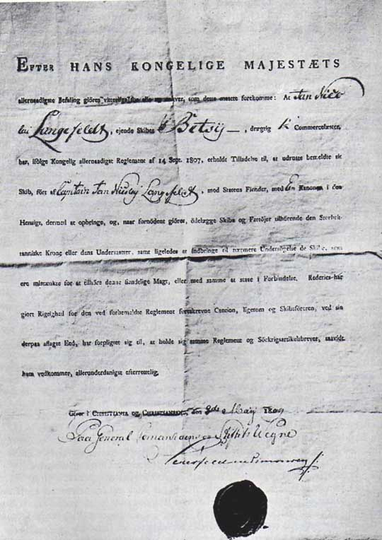
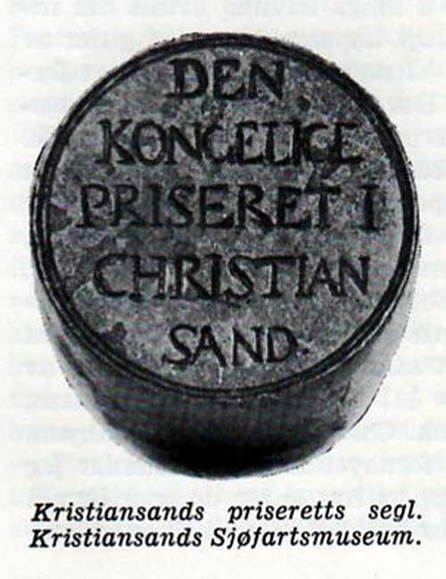
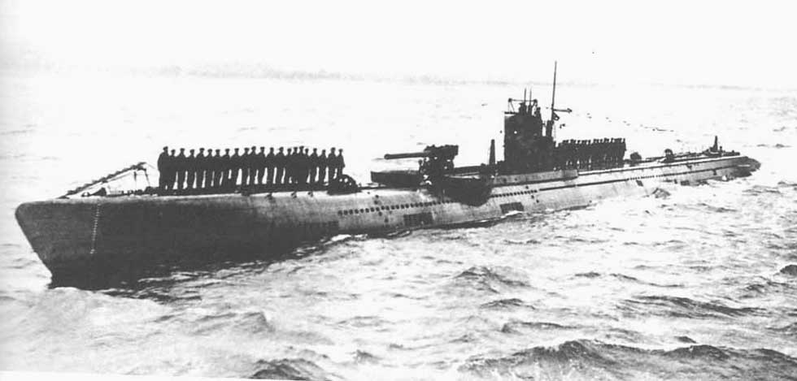
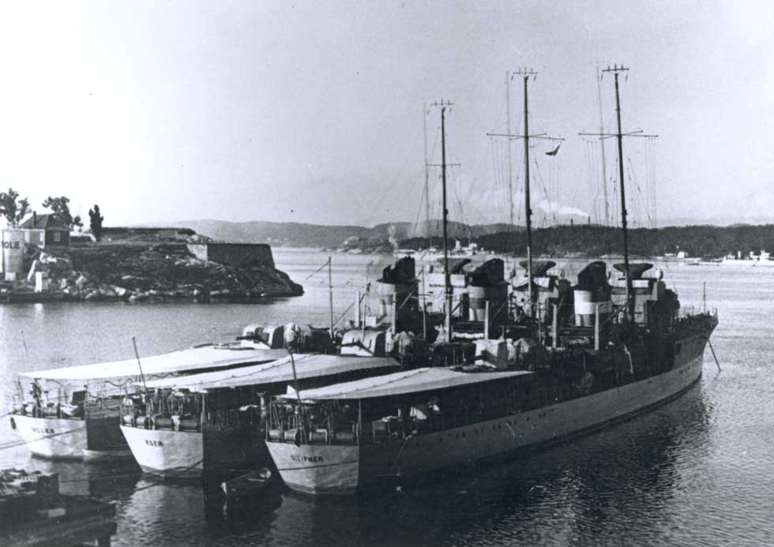
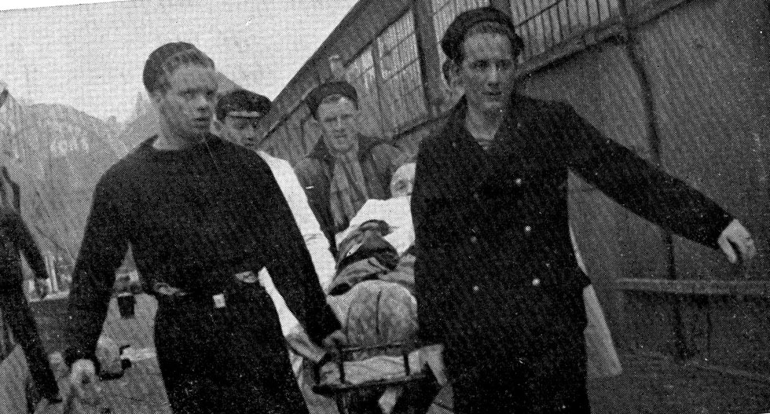
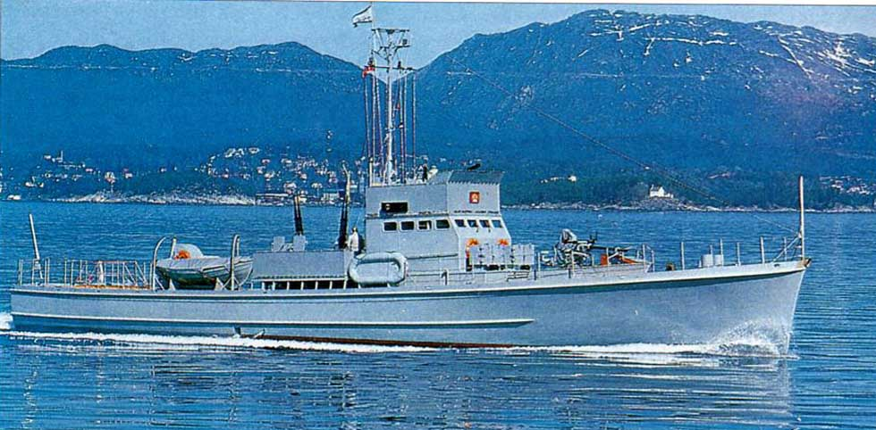
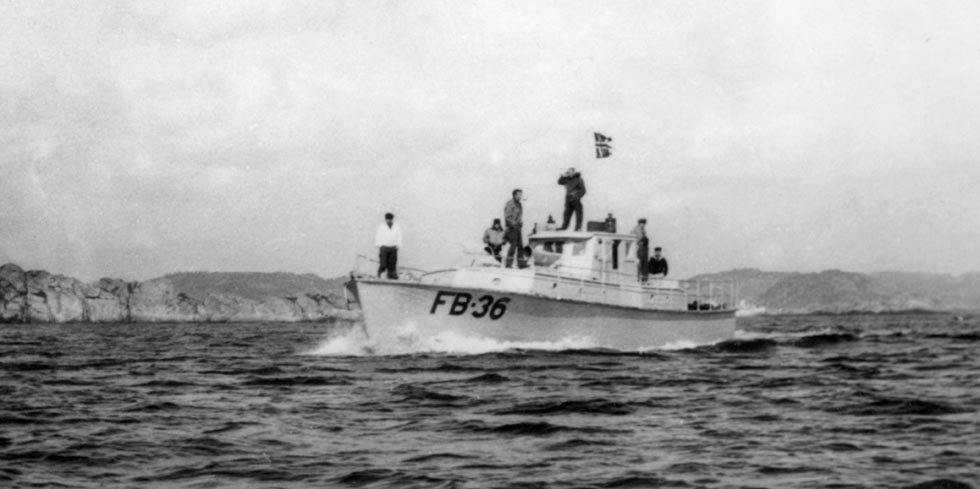
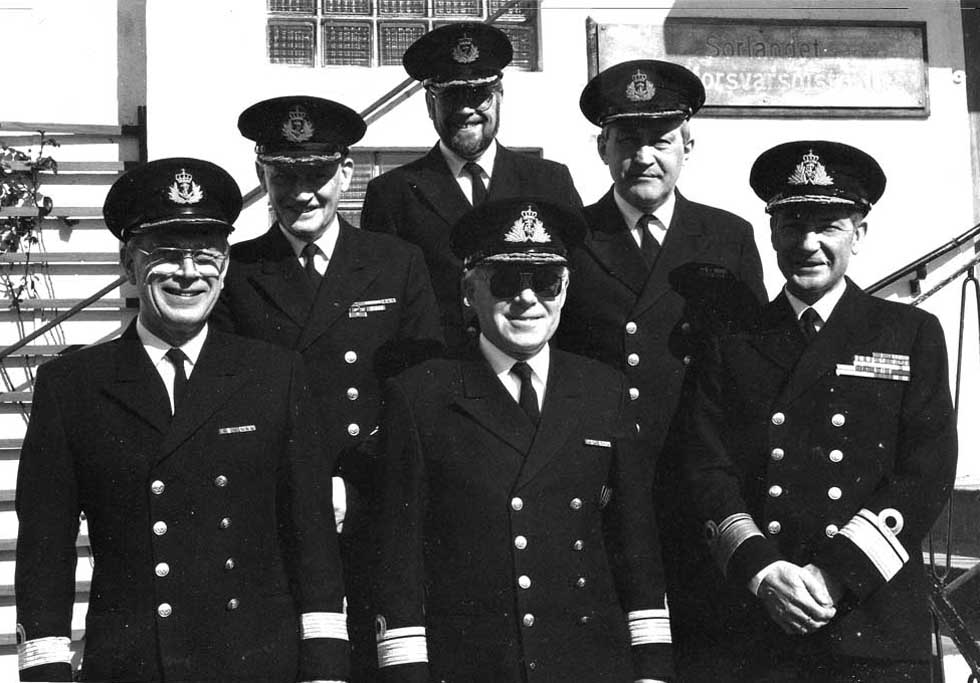

Marinehistorien sett fra Agder
- fra Leidang til piratkrig på Afrikakysten
Bildeportalen er samlet av Per Kjell Kristiansen, tidligere flaggkommandør i Marinen.
Bildeportalen må oppfattes som stikkord med henvisning til kilder og opplysninger om det tema som ønskes belyst. Disse kilder er henvist til under hvert bilde og er gitt nummer som refererer til en boklisten nederst på siden.
Vikingtid
Leidangen
- les mer i bok 1,2,3 og 4
Kong Håkon I, den gode (ca 930 - 960) organiserte Leidangen, en folkeflåte med hærstyrker ombord til å forsvare landet mot ytre fiender. Leidangen var en forsvarsordning basert på at befolkningen i de forskjellige landsdeler pliktet å hjelpe hverandre i tilfelle angrep. Bestemmelser om Leidangsordningen finnes både i Gulatingsloven og Frostatingsloven.
Skipreider
- les mer i bok 1,2,3 og 4
Gulatingsloven bestemte at landet skulle være inndelt i skipreider. Hvert skipreide skulle ruste ut et skip med mannskap. For hver sjuende innbygger i skipreidet skulle det rustes ut en mann til Leidangsflåten. Antall innbyggere bestemte derved størrelsen på flåten. Agderfylkene (Egdafylket) var tynt befolket og stilte med 15 skipreider, mens Rogaland (Rygjafylket) stilte med 32. Størrelsen på de åpne langskipene ble angitt i sesser som betyr sitteplasser på hver side av skipet. Leidangsordningen forfalt da Svartedauden og de senere pestepidemiene på 13- og 1400-tallet reduserte befolkningen kanskje til det halve av hva den hadde vært. Folketallet begynte ikke å vokse igjen før på 1500-tallet.
Vedenavn (Vitenavn)

- les mer i bok 1,2,3 og 4
Vedeordningen var opprinnelig et eldgammelt system for visuell varsling av enkleste slag, det vil si med røyk og ild. I Norge ble denne varslingsform en del av Leidangsordningen, men har også vært brukt inne i landet i de dalstrøk som var befolket. Varslingen virket slik at det på steder som var synlige på lang avstand, ble tent bål for å varsle fare. Når et slikt faresignal ble observert, var det meningen at det så raskt som mulig skulle sendes videre som en kjedereaksjon. Derfor var store stabler av stokker gjort klare på fjelltopper som var utpekt på forhånd. Vedene finnes igjen i stedsnavn på fjelltopper som i sin tid har vært i bruk til varsling.
Vede
- les mer i bok 1,2,3,4 og 5
Det opprinnelige norske navn er vite. Vede og baune er dansker versjoner som fremdels brukes på henholdsvis Sør- og Vestlandet. Et fåtall av den opprinnelige vedetypen som sannsynligvis ble satt opp så sent som under Napoleonskrigene tidlig på 1800-tallet, var fremdeles intakte 200 år senere. Dette bildet er fra Rollag i Numedalen. Stokkene må ha vært av malmfuru. Slikt tømmer var det etter hvert mindre igjen av i kystsonen. Under Syvårskrigen 1807 - 1814 ble den såkalte klapptelegrafen tatt i bruk som meldingssystem langs kysten.
Magnus Lagabøters landslov
- les mer i bok 3
Bilde fra innledningen av Magnus Lagabøters landslov (manuskript fra første halvdel av 1300-tallet). Krigere står i stevnen på et vikingskip med en prest mellom seg. Helt siden loven ble vedtatt på tingene i 1274 - 76, har Norge hatt en lovgivning samlet i en lovbok gjeldende for hele landet. I Europa er det bare Island som har hatt en "landslov" like lenge (Kilde: Wikipedia 2009)
En nøyaktig kopi av Gokstadskipet
- les mer i bok 1,2,3 og 4
I 1893 seilte sjøkaptein Magnus Andersen med et mannskap på 11 fra Norge til USA med Viking, en tro kopi av Gokstadskipet. Ferden fra Bergen til New London i Connecticut tok 44 døgn. Sjømannskap og skipsbyggingskompetanse har lange tradisjoner i Norge. Gokstadskipet som ble bygget omkring år 900, ble funnet i en gravhaug på Gokstad i Vestfold 1000 år senere.
Våpen
- les mer i bok 1,2,3 og 4
I følge Gulatingsloven skulle hver mann ha bredøks eller sverd, og spyd og skjold. Tidligere krevdes kun buer og økser som var allemannseie og derfor relativtrimelig å anskaffe. Bildet viser bønder som blir inspisert av en våpenkyndig øvrighetsperson. Flere bærer armbrøst, et våpen som i Norge ble tatt i bruk på 1100-tallet.
Kystforsvar i middelalderen
- les mer i bok 3,15,24 og 51
Vedene er tent langs kysten. Ryttere møter fienden i strandsonen. Landstyrken er skjult i innlandet. Fartøyet som angriper er utrustet med kanoner og har åpnet ild mot rytterne.
Forfallstid
Sørlandets eikeskoger
- les mer i bok 2 og 6
Fra midt på 1400-tallet fikk hollenderne handle eiketømmer direkte med skogeierne på Sørlandet. Hollenderne var dyktige sjøfolk og skipsbyggere og bygget handelsskip og marinefartøyer til flere land på kontinentet. I mer enn 200 år ble enorme mengder eikeskog hugget ned. Kong Christian IV forsøkte å stramme inn kontrollen med tømmerhandelen. Han aktet å samle alle norgesfarere i Flekkerøy havn, for å seile derfra til Nederland i konvoi. Selv om han aldri fikk full kontroll med trelasthandelen til utlandet, tilfalt allikevel store summer statskassen i form av toll og avgifter. Bildet viser dekorasjon på nederlandsk sjøkart påført seilmerket "Den omvendte båt" ved Kristiansand samt norske tømmerhoggere. Det siste er sjeldent å se på et sjøkart.
Kogg

- les mer i bok 1 og 3
I andre halvdel av 1200-tallet fikk Hanseatene innflytelse i Norge. De drev utstrakt handelsvirksomhet og benyttet skip som var helt annerledes enn de nordiske langskip. Deres skip ble kalt kogger og var bredere, høyere og kortere enn langskipene. De utkonkurrerte nordiske skipstyper både med hensyn til lasteevne og som krigsskip. Dette innebar slutten på en æra der Leidangen og langskipene ikke engang var i stand til å opprettholde sjøherredømme i sine nærområder.
Dansketid
Skjærgårdsbåten
- les mer i bok 1 og 4
Til avløsning for Leidangen ble det på 1600-tallet etablert et kystvern av skjærgårdsbåter. Fra byene skulle det utrustet en noe større skipstype benevn galeier Skjærgårdsbåtene hadde en besetning på inntil 30 mann og var utstyrt med lette kanoner. De hadde en mindre seilføring og som oftest ble de rodd. Dermed kunne de manøvreres rask i trangt farvann. Galeiene var større med opp til 150 mannsbesetning, 20 par årer og tre mann på hver åre. De mindre galeiene hadde kanoner i stevn eller akterut. De større hadde også tverrskips plasserte kanoner. Se bilde nr 027 av Løwendals galei.
Oldenborgmonarkiet
- les mer i bok 3
Etter reformasjonen, 1536 - 1537, opphørte Norge å være eget kongerike. Med Christian I ble fyrsteslekten Oldenborgerne konger over de to land Danmark og Norge samt flere småstater (i dagens Sverige og Nord- Tyskland). Det samlede rike ble Oldenborgmonarkiet. Norge hadde opprinnelig en lavstatusstilling på linje med småstatene. Mot slutten av 1600-tallet ble Norges stilling oppgradert. I begynnelsen av Christian IV regjeringstid var Danmark-Norge på høyden av sin makt: Den norsk-danske flåten, gjerne kalt fellesflåten, ble kraftig utbygd og var blant de sterkeste krigsflåtene i Europa. Det var denne flåten som gjorde det mulig å beherske de store sjøområdene i Norskehavet, Nordsjøen og Østersjøen som av danskene ble kalt "Kongens Strømme".
Kong Christian IV
- les mer i bok 11
Christian IV ble kronet til konge av Danmark og Norge allerede som 19 åring i 1596. Han var en av de få konger i dobbeltmonarkiet med store kunnskaper. Med sin solide utdannelse forsto han betydningen av gjøre seg kjent med sine nordiske land og folk. Han grunnla flere byer for å styrke handel og forsvar. Christianssand ble grunnlagt i 1641 etter at han tidligere hadde avlagt gjentatte besøk i havnen Indre Flekkerø. Herunder hadde han sett betydningen av å etablere en hovedhavn på Skagerrak-kysten for å kunne sikre forbindelsene mellom Danmark og Norge og samtidig kontrollere og utnytte sjøforbindelsene mellom Østersjøen og Nordsjøen. Til tross for sine utvilsom store strategiske kunnskaper, var han uheldig i konflikter og kriger. Fellesmonarkienes maktposisjon og innflytelse i Norden gikk etterhvert tapt, særlig i siste del av hans regjeringstid.
Flekkerøy havn
- les mer i bok 6 og 58
Peder Claussøn sier i sin Norges beskrivelse at mellom Flekkerøy og fastlandet på den vestre side "er den navnkundige havn Flekkerøy, hvilken er den allmindeligste havn i denne søndre part idi Norge ..." Sikkert er det at havnen var vidt kjent og besøkt av hundrevis av skip på 1600-tallet, iallfall fra 1650-årene. Som havn var den glimrende, med god plass og allikevel godt beskyttet i all slags vær, lettvint inn- og utseiling, likegyldig hvilken retning vinden stod fra og alltid isfri. 16. januar 1628 utgikk et kongebrev fra Christian IV til Christopher Giøe, lensherren på Agdesiden, med befaling om straks å bygge et blokkhus på Slottsøen i Flekkerøy, den senere Christiansø og Flekkerhus. I 1635 stod et blokkhus ferdig og fortøyningsringer var slått ned i fjellknausene. Men kongen hadde større planer, og allerede samme år la han frem store utvidelsesplaner for riksrådet. Det ble bygget en festning med alt som dertil hørte og en mur rundt hele øya som nå ble gitt navnet Christiansø. Kongen ville gjøre stedet til en befestet og sikker havn, men også til et senter for administrasjonen av hele Agdesiden len på samme måte som Akershus, Bergenhus og andre festninger i hans vidstrakte kongerike. I den sammenheng ble navnet Flekkerhus benyttet.
Christiansø
- les mer i bok 6
Fra 1550-årene hadde Flekkerøy vært den viktigste havn på Agder. I 1556 gav Kong Christian IV ordre om å etablere en festning som kunne forsvare denne strategisk viktige havnen mellom Flekkerøy og fastlandet. I en fart ble det reist et blokkhus på en holme i Vestergabet, og siden ble jordegods lagt til. Fra 1559 bar befestningen det stolte navn Flekkerhus, slik Oslo og Bergen hadde sine befestninger Akershus og Bergenhus. Agdesiden kaltes Flekkerhus len. Tidlig på 1560-tallet ble det fredelige forhold. Anlegget forfalt på grunn av manglende bevilgninger,og virksomheten ble nedlagt. En ny festning nærmere fastlandet - Fredriksholm - overtok ansvaret for innløpsforsvaret i Vestergapet.
Fredriksholm festning
- les mer i bok 6, 10 og 13
Etterhvert som ambisjonene avtok og det inntraff fredeligere forhold, ble festningen i Vestergapet benevnt Christiansø nedlagt. Den ble for kostbar å drive videre. Midt på 1600-tallet ble påbegynt bygging av en ny festning på en holme nærmere fastlandet. Byggematerialer ble hentet fra det tidligere festningsanlegg som nå ble kalt Gammeløen. Den nye festning ble oppkalt etter Frederik III og gitt navnet Fredriksholm (Friderichs Holm, se bilde nr 024 ). I tillegg til å forsvare Flekkerø havn, gav festningen beskyttelse beskyttelse av innløpet fra vest mot den nye by og havn som var i ferd med å vokse frem ved utløpet av Otraelven.
Fellesflåtens linjeskip

- les mer i bok 6 og 10
Christian IV`s regjeringstid var rikenes orlogsflåte nest etter den engelske, den mest dominerende i Nord-Europa. Den talte mellom 50 og 60 større skip som var indelt i klasser: Linjeskipene var fullriggere på 1000 - 1500 tonn med kanoner på to eller tre overbygde dekk. De største kunne ha opp til 100 kanoner og en besetning på 500 mann. Fregattene var mindre, men også disse var fullriggere dvs de førte skværseil på tre master. Bestykningen var fra 16 til 44 kanoner på et overdekket kanondekk. Mindre orlogsskip var brigger, snauer og galioter som førte seil. Enda mindre var galeier, sjalupper og kanonbåter som kunne manøvreres ved hjelp av årer i smult farvann
Den Norske Løwe

- les mer i bok 3
Fregatten Den norske Løwe - bygget i 1654 - var flaggskip i en dansk-norsk - nederlandske eskadre som vernet sydvestkysten av Norge under krigen mellom Nederland og England i 1666. Danmark - Norge var på Nederlands side i denne krigen. Da skipet i november samme år løp inn til Egersund for å søke nødhavn, gikk det på grunn ved Auglend. Det overhendige vær forhindret berging. En modell av fregatten utført i elfenben og sølv oppbevares i Rosenborg slott, København.
Christianssand
- les mer i bok 6, 10 og 18
Under herredagen i Bergen 5. juli 1641 utstedte Kong Christian IV fundasjonsbrev for kjøpstaden Christianssand. Han la forholdene til rette for vekst ved å frita innbyggerne for skatt, og oppfordret de fremste borgere i distriktet til å bygge seg hus på Sanden ved utløpet av Otraelven. Byens vekst kunne bare påskyndes ved å gi rikelige privilegier allerde fra den første tid. Kjøpstaden fikk bispesete og skulle utvikles til en garnisons- sjøfarts- og handelsby. I nordvestre hjørnet av kvadraturen ses Galeiverftet (Wervet) som sammen med opplagshavnen på Lagmannsholmen (Hukket) utgjorde byens orlogsstasjon. Dette synes å være det første militære anlegg i Kongens by.
Christiansholm
- les mer i bok 6 og 43
Festningen Christiansholm ble bygget sentralt i Østerhavnen og lå opprinnelig atskilt fra land av en vollgrav. Den var en av landets hovedfestninger og ble påbegynt allerede i 1650-årene for å beskytte byen som Christian IV hadde anlagt i 1641. Sommeren 1700 og under Den store nordiske krig eller 20-års krigen var festningen sammen med batteriene på Odderøya, Lagmannsholmen og Dybingen samt Frederiksholm i Flekkerøy havn, satt i beredskap sammen med garnisonen og flåten. Det var et formidabelt oppbud av militærmakt og en oppfyllelse av Christian IVs visjoner den gang han grunnla byen. I dag er Christiansholm i kommunal eie og benyttes til et bredt spekter av kulturarrangementer.
Galeihavnen Hukket eller Hocket på Lagmannsholmen
- les mer i bok 6, 10 og 13
Til fortøyning av orlogsflåten var det på Lagmannsholmen slått ned fortøyningsringer samt at det mellom havnebryggene og holmen var pæler slått ned i bunnen på havnebassenget. Her lå skipene skjult bak holmen, i ly for vær og vind og samtidig beskyttet av kanonbatterier i Vesterhavnen. Den dansk - norske- flåteavdeling som var stasjonert i Kristiansand fra slutten av 1600-tallet og inntil 1722, ble kalt Den norske eller den Christianssandske søekvipage. Antall fartøyer i oplagshavnen og byggevirksomheten ved galeiverftet varierte med krigstrusselen. I 1691 besto ekvipagen av 2 fregatter, 7 galeier, 3 skjærbåter 2 gallioter og 1 brigantin.
Christianssand 1700
- les mer i bok 6 og 10
Sverre Steen skriver i sin byhistorie: Sommeren 1700 førte Danmark-Norge en tremåneders krig med Sverige. Christianssand som var festningsby, flåtehavn og garnisonsby fikk straks føling med krigen. Deretter fulgte fra 1709 nærmere 20 års krig. Turbulente år da bygging og utrustning av skjærgårdflåten, festninger og infanteri førte til stor aktivitet i byen og omegn. Under Den store nordiske krig var tidvis mer enn 500 mann forlagt i byen. De fleste måtte innkvarteres privat. De reposerede - av fransk reposé hvile - i øvre deler av kvadraturen. Derav kommer navnet Påsebyen. Dette var en stor belastning for en by på snaue 3000 innbyggere. Til venstre på bildet ligger galeiverftet der bygge- og reparasjonsvirksomheten var stor (se wervet på bilde nr 19). Byen var under krigen hovedbase for den norske del av fellesflåten som på det meste bestod av ca 50 fartøyer. Bildet illustrerer de hektiske forhold på havnen.
Defensjonsskipet Margrethe av Christianssand 1793
- les mer i bok 6
Defensjonsskip var koffardifartøyer hvis redere hadde fått en del lettelser mot plikt til å utruste fartøyene som hjelpe-orlogsskip i krig. Skip av godkjent type på over 150 comersilester ble belønnet med en premie på 8 riksdaler pr lest. De siste årene av 1700-tallet var gode år for norsk skipsfart. I flere av sørlandsbyene ble det bygget nye skip i økende antall og handelen på utlandet gikk livlig.
Tordenskjold
- les mer i bok 2,3,6 og 10
Peter Wessel Tordenskjold er en av de store heltene i norsk militærhistorie. Han gjorde lynkarriere i den dansk / norske flåten. Rådmannssønnen som rømte fra Trondheim, steg på få år i gradene til han ble viseadmiral og adlet av kongen med navnet Tordenskjold. Hans karriere falt sammen med den store nordiske krigen. Utfordringene for en ung og freidig offiser var mangfoldige, og han grep enhver mulighet. Alle kriger har bruk for helter, og Tordenskjold hadde den rette legning. Historiene om hans bragder inneholder nok en del diktning, men han ble en av tidens mest berømte menn. Dette skaffet ham også fiender. Livet til den 29 år gamle admiral tok en brå slutt i 1720 under en ydmykende duell fulgt av en æreløs begravelse. Først i 1819 ble han rehabilitert og kisten satt i marmorsarkofag i Holmens kirke - marinekirken i København.
Galliot

- les mer i bok 2 (bind 2)
Tremastet galiot (merk trelast på dekk) fra siste halvdel av 1700-årene, var et typisk lastefartøy i Nord-Europa. Den hadde sin opprinnelse i den nederlandske galjoot som var et allsidig lastefartøy. På 1600-tallet var det vanlig med to mastet rigg, men senere var tre master alminnelig. Også etter 1814 var det noen galioter som seilte med trelast fra Sørlandet til Holland.
Dansk - norsk flåtestyrke
- les mer i bok 2,3,6, og 10
Bildet viser krigsskip fra fellesflåten under Den store nordiske krig. Det minste skipet i forgrunnen er Peter Wessel Tordenskjolds fregatt Løwendahl Galley. De store fartøyene er såkalte linjeskip. De hadde kanoner på minst to eller tre dekk, mens fregattene kun hadde kanoner på det ene åpne øverste dekk.
Kanonbatteri i 1807
- les mer i bok 2,3,6,10,15 og 24
Etter at den dansk norske fellesflåten var tapt i 1807 (flåteranet), og Danmark erklærte krig mot England, måtte Norge greie seg på egen hånd. Det ble satt i gang utbygging av forsvarsverker langs kysten av Sør-Norge. I tillegg til de eksisterende festningsbyer, ble i særlig grad kyststrekningen fra Flekkefjord til svenskegrensen spekket av kanonbatterier.
Kystforsvar 1807 - 1814
- les mer i bok 2,3,6, og 10
Kystforsvaret i Oslofjorden og langs Sørlandskysten ble forsterket med en lang rekke kanonbatterier med lokaleoppsetninger. 5-stjernemerkene indikerer permanente fortifikasjoner , mens 3-stjernemerkene er de mangeimproviserte anlegg. Sabler i kryss angir større trefninger mellom egne marinefartøyer og inntrengere. Flere trefninger utenfor Kristiansand er ikke tatt med. Se bilde nr 033, nr 037 og nr 038.
Sjøslaget på Københavns red i 1801
- les mer i bok 2 (bind 2) og 3
Under Napoleonskrigene som hadde sitt utspring i den franske revolusjon i 1789 - 91, skjedde mye som også hadde stor innflytelse på Norges sikkerhetspolitiske situasjon. Vår landsdel ble på grunn av nærheten til kontinentet og den betydelige vekst i utenriks sjøfart, i særlig grad påvirket av hendelsene ute i verden. Mens krigene raste mellom stormaktene, forsøkte Danmark / Norge å holde på nøytraliteten. For begge land var det i høy grad nødvendig å unngå å komme i krig med England. Forholdene til sjøs ble etter hvert preget av Englands kamp for sin eksistens, og norske skip ble stadig oppbrakt. Da Danmark-Norge gikk inn i et nøytralitetsforbund med andre europeiske land, reagerte England. I 1801 seilte den engelske flåten inn på Københavns red. Men mot den dansk-norske fellesflåten måtte selv Lord Nelson på flaggskipet bøye av. Dette må ha vært en vekker, for neste gang flåtene møttes hadde engelskmennene forberedt seg bedre. Da kom de med hele sin flåte og i tillegg et ekspedisjonskorps som truet med å brannbombe Kjøbenhavn. Kongen bøyet unna og engelsmennene tok med hele fellesfåten i krigsbytte( flåteranet). Den ble aldri levert tilbake eller gjenoppbygget. Det verste for Norge var at Kongen erklærte krig mot England. En katasrofe som førte til isolasjon og ødela for norsk handel og skipsfart.
Kristiansand festning i 1807
- les mer i bok 13
På slutten av 1700- tallet hadde forsvarsverkene rundt Kristiansand forfalt. Ved århundreskiftet måtte tiltak iverksettes for å gi byen et minsteforsvar ettersom Napoleonskrigene utviklet seg særdeles ugunstig for Norge. Gamle kanonbatterier ble nedlagt og nye opprettet. Østre havn skulle i tillegg til Christiansholm beskyttes av nye batterier på Odderøyas østside, Galgeberg og på Tangen. Til forsvar av Vestre havn ble opprettet batterier på toppen av Odderøya, i Sandviken og Lagmannsholmen. I tillegg ble det bygget kanonjoller og de gamle flåtebatteriene ble holdt flytende så vidt det var.
Klappertelegraf
- les mer i bok 2 (bind 2), 3 og 24
Signaltjeneste langs kysten ved hjelp av den såkalte klappertelegrafen avløste flaggsignalene som fulgte etter bruken av veder. Klappertelegrafene ble stort sett oppført på de samme høyder som de tidligere stasjoner, og bestod av lemmer som kunne dreies om en horisontal akse i tre stillinger: horisontal lukket lem og åpen lem opp eller ned. På denne måte kunne sendes 229 forskjellige tegn. Våren 1809 ble forbindelsen østafjells åpnet til Hitra ved Flekkefjord. Vi kjenner til at kysttelegrafen i juli 1812 tilkalte kanonbåtene i Arendalsflotiljen til slaget ved Lyngør, da fregatten Najaden ble angrepet og senket av det engelske linjeskipet Dictator. Se bilde nr 039.
Opplagsskurene på Otras vestbredd
- les mer i bok 10,13 og 18
I 1808 ble det bestemt at det i Kristiansand skulle anlegges et Kongelig verft for roflotiljen på Otraelvens vestside. Bildet viser søndre del av verftet med opplagskurene for rokanonjoller, senere også de noe større rokanonsjalupper. Midt på 1800-tallet bestod flotiljen av 23 kanonsjalupper hvorav de fleste var bygget ved skipsverft i Kristiansand. Kongens Verft ble beskyttet av Gleodden kanonbatteri til høyre og Borgerbatteriet som lå mellom Christiansholm og Kongens Veft (ikke synlig på bildet). Borgerbatteriet som ble bemannet av byens borgere, ble ikke nedlagt før rmidt på 1800-tallet. Gleodden ble forsterket til 9 kanoner under 7-års krigen. En større brann i 1887 langs østre del av kvadraturen, ødela 8 kanonbåtskur, og bybrannnen i 1892 i søndre bydel ødela resten av Kongens verft. Lite hadde foregått ved verftet under unionstiden med Sverige, og det ble ikke bygget opp igjen inne i byen. Ved århundreskiftet ble det erstattet av en ny opplagshavn i Marvika ved utløpet av Topdalsfjorden.
Kanonjoller og kanonsjalupper
- les mer i bok 2 (bind 2), 6 (bind 1) og 10
Ved tapet av den dansk-norske flåten i 1807, var norskekysten og sjøforbindelsene til Danmark uten beskyttelse av havgåënde orlogsskip. For å bøte på dette katastrofale tap, ble det ved alle verft langs kysten i Sør Norge bygget et stort antall kanonjoller og kanonsjalupper som kunne føres frem med årer eller seil. Jollene målte ca 40 fot og sjaluppene ca 60 fot. De var primært bygget for å operere i kystnære farvann. Begge båttyper hadde som hovedarmering en kanon akterut og en i baugen Under kamp ble mastene tatt ned og manøvreringen gikk raskt ved hjelp av opp til 11- 12 årepar. Båtenes lave silhuett og raske manøvrer gjorde det vanskelig for fienden å treffe målet. De ble rodd tett innpå større fartøyer som i trange farvann og under vanskelige vindforhold kunne bli totalt utmanøvrert. Motivet er fra slaget hvor den britiske briggen Seagull ble nedkjempet utenfor Kristiansand i 1808
Prisonen
- les mer i bok 2,3,6, og 10
Mot slutten av Napoleonskrigene fra 1807 til 1814 var Danmark-Norge i krig med England. Etter Flåteranet i København i september i 1807, behersket den engelske flåten sjøområdene i Nord-Europa. Danske og norske skip ble oppbrakt og besetningene internert og holdt som fanger ombord i utrangerte seilskuter, på folkemunne i Norge kalt Prisonen. Forholdene var kummerlige ombord i disse skutene som lå oppankret i havnebyene på Englands sør-vestkyst. Det var slett ikke en fordel for mannskapene at de ble holdt atskilt fra offiserene som etter engelsk skikk fikk tillatelse til å bo i land. Offiserene var på parole det vil si de hadde avgitt æresord på at de ikke skulle rømme. Blant besetningene som ble holdt ombord, fremsto naturlige ledertyper som aktiviserte sjøfolkene ved å undervise i språk, navigasjon, sjømannskap m.m. Hjelp til å skaffe undervisningsmateriell fikk de av engelske kvekerprester som drev velferdstjeneste for fangene. Flere sjøfolk med kunnskaper ervervet under oppholdet i Prisonen, opprettet navigasjonsskoler på sine hjemsteder etter krigens slutt. Likeledes fikk kvekerbevegelsen sterk vekst på Sør-Vestlandet i årene etter krigen.
En ruvende skikkelse i en krisetid
- les mer i bok 6
Fellow citizens !!! Peace is broken! The most holy observance of Neutrality has not been capable to secure the Coasts of Peace against the Hand of the Assailant! Allready have the Blood of the Twin-States Heros been flooded for the sake of King and Country ! Norwegians! Citizens of the County of Christianssand !!! In the Name of His Majesty the King I call on You to muster in Arms! Let us show our Land and Royalty worthiness, they whom we with Proudness are calling ours! Our Watchword be FREDERIKs Word: God and the Cause of justice! ! !
- Christianssand 25 August 1807. THYGESON, County Officer in Command
Slaget ved Sjellands Odde
- les mer i bok 21
Da linjeskipene Prinds Christian Frederik og Lougen kom fra utenlandstokt i 1807, anløp de Kristiansand for å bli orientert om situasjonen etter Flåteranet i København. De ble samtidig supplert med norske mannskaper før det forlot Kristiansand i september 1807 etter det engelske angrepet på byen. Den 22. mars året etter kom Prinds Christian Frederik i kamp med en overlegen engelsk flåtestyrke utenfor Sjellands Odde, ble skutt i brann og satt på grunn. Av besetningen på 575 mann var to tredjedeler norske, og av de 63 som omkom under slaget, var 46 nordmenn. 371 av besetningen ble sendt i den engelske Prisonen , og mange av disse kom fra Sørlandet. I Norge satte den initiativrike stiftamtmann Thygesen i Kristiansand i gang en innsamling under formålet: "Bidrag til Orlogsskibet Prinds Christian Frederiks Faldnes Enkers understøttelses Angående".
Britisk kutterbrigg nedkjempet utenfor Kristiansand
- les mer i bok 2 (bind 2) og 6
Etter flåteranet i september 1807 og tapet av linjeskipet Prinds Christian Frederik ved Sjellands Odde i mars 1808, var briggen Lougen det eneste linjeskip i fellesmarinen. Lougen forble i Norge og ble det mest kjente marinefartøy i syvårskrigen. Det førte an i mange angrep på fiendtlige skip. Sommeren 1808 kom det til kamp med den britiske briggen Seagull utenfor Flekkerøya. Etter at tre rokanonbåter kom til assistanse, strøk engelskmannen flagget og ble tatt tatt under slep til land. Skipet var så hardt skadet, at det måtte settes på land i Fossholmbukta. Siden ble Seagull berget og etter en omfattende reparasjon deltok linjeskipet under resten av krigen på dansk/norsk side. Året etter var Lougen igjen i kamp med en større britisk brigg utenfor Kristiansand. Denne gangen kom engelskmannen seg unna.
Et gedigent varp
- les mer i bok 2 (bind 2),6 og 49
De dansk-norske orlogsbriggene Samsøe, Seagull, Allart, Alsen og Kiel under kaptein Kriegers kommando, tok i 1810 som prise en konvoi som bestod av 16 briggskip, 9 fregattskip, 7 brigger, 8 galeaser, 3 skonnerter, 1 slupp og 1 koff . Skipene ble ført inn til Kristiansand, hvor priseretten trådte i aksjon, hvoretter skip og last ble solgt på en auksjon som innbrakte 7.5 millioner riksdaler. Salget begynte i 1811 og først i juli 1813 var det hele avviklet. Etter tre års krig ble i særlig grad lasten som bl.a. bestod av hvetekorn, sukker, seilduk, linduk m.m. en meget velkommen tilførsel av mangelvarer. Skipene ble alle solgt til kjøpmenn og redere langs Sørlandskysten og så langt øst som til Kristiania.
Lyngørslaget
- les mer i bok 2 (bind 2)
I Napoleonskrigens siste fase finner vi historien om fregatten "Najaden". Det var det andre stor krigsskipet som ble sjøsatt etter at engelskmennene kapret den dansk-norske flåten i 1807. Fregatten ble sjøsatt 26. oktober 1811, og avgikk til Norge 28. februar 1812. Da skipet ankret i Brekkestø den 29. februar, gikk akterskipet på grunn og ble skadet. Det ble så liggende til ut i mai i Kristiansand for reparasjon. Bestykningen ble økt fra 36 kanoner til 42. Besetningen ble også økt fra 297 til 315. Men denne økte kanonmengden var til liten nytte. Den 6. juli 1812 ble "Najaden" angrepet inne på Lyngør havn av det engelske linjeskipet "Dictator" med 68 kanoner. Fregatten ble helt ødelagt. Den kantret og ble liggende og brenne før den sank. 2/3 av mannskapet falt eller ble skadet. Det skal være det høyeste tapstall noen sinne i den dansk-norske flåten.
Kartutsnitt som viser Dictators seilas innaskjærs til Lyngør
- les mer i bok 2 (bind 2),3
Kaptein Hans Peder Holm på Najaden undervurderte engelske marinefartøyers evne til å navigere og utkjempe sjøslag i trangt farvann. Diktator sammen med de øvrige mindre engelske fartøyene hadde en viss overvekt i antall kanoner i forhold til Najaden og de øvrige dansk-norske skip. Men ankerposisjonene i Lyngør tyder på at Holm ikke hadde tatt i betraktning at han kunne komme til å måtte forsvare seg overfor et engelsk angrep inne i havnen. Diktator sendte avgårde bredsider mot de dansk-norske fartøyene fra det øyeblikk skipet seilte inn i havnen. Av Najadens kanoner kunne bare 6 - 8 komme til skudd. I løpet av en halv time var kampen avgjort. Sjøslaget endte med det største tap av liv noengang i den dansk-norske orlogsflåten, og et knusende nederlag for de to lands stolte maritime tradisjoner.
Kaperbrev
- les mer i bok 49
Kaperfarten slik som Danmark-Norge drev denne virksomhet under den såkalte syvårs krigen med England (1807 - 1814), var egentlig i sin opprinnelse den eldgamle og forbryterske virksomhet som vi kjenner som sjørøveri. Norge som sjøfartsnasjon og avhengig av havenes frihet og internasjonal handel, hadde alltid foraktet og motarbeidet sjørøveriet. Etter det engelske angrep på Kjøbenhavn i 1807 og tapet av den dansk- norske orlogsflåten, besluttet kronprins Frederik - den senere kong Frederik VI - å slå tilbake mot England med alle tilgjengelige midler inkludert kapervirksomhet. Han oppfordret også prins Christian August i Christiania til å utstede ordre om utrustning av norske sivile skip med kanoner for å bekjempe all sjøfart som tjente engelske interesser. Prinsen hadde motforstillinger mot å slippe løs en lik risikabel virksomhet og avventet nærmere retningslinjer fra en regjeringskommisjon som var opprettet i sakens anledning.
Kaperfart og priserett
- les mer i bok 6 og 49
Ved årsskiftet 1807-1808 måtte Prins Christian August bøye av for Kongens sterke og gjentatte oppfordringer om å gi støtte til sivile skipsredere som ville finansiere kapervirksomhet. Interessen var laber fordi det kostet å utruste og drive et kaperskip, og virksomheten var risikabel. Stiftamtmennene var nærmest forpliktet til å støtte virksomheten ettersom Kong Frederik selv stod bak initiativet. Stiftamtman Thygeson i Kristiansand var en av de vrigste og opptrådte selv som kaperreder. De fleste kaperskip var mindre åpne båter opp til 15 kommerselester ( 1 kommerselest er 2 registertonn). I Kristiansand ble opprettet priserett for det Sønnafjeldske. Priseretten var en særdomstol som kun var innrettet til å avsi dommer i prisesaker. Den avgjorde om en prise var lovlig eller ikke. Av totalt 450 innbrakte priser på landsbasis, ble 300 behandlet av priseretten i Kristiansand.
Unionstid
Østerhavnen i Kristiansand i 1814
- les mer i bok 7
Med freden fulgte nedgangstider. Fordi den store fremgang i byen siden 18oo stod i så nær forbindelse med krigen, ble tilbakeslaget da freden kom voldsommere enn i noen annen by. Krigs- og kriseinstitusjonene ble hurtig avviklet. De utskrevne soldatene ble sendt hjem, den faste garnisonen og offiserskorpset ble redusert, og en rekke sivile embeter nedlagt. Byggingen av skip til orlogsflåten opphørte, likeså produksjon av annet materiell til forsvaret som hadde skaffet arbeid til mange håndverkere. Alle behov ble redusert, og arbeidsløsheten steg til store høyder. Mange reiste fra byen for å skaffe seg arbeid andre steder. De dårlige tidene vedvarte til 1830-tallet.
Vesterhavnen i Kristiansand i 1824
- les mer i bok 7
Kristiansand og Sørlandet var i de første år av 1800-tallet preget av nedgangstidene etter 7-årskrigen med England. Den engelske dominans på havet medførte store problemer for vårt tradisjonelle samkvem med Danmark og for norsk sjøfart og handel i alminnelighet. På den andre siden førte krigen til øket aktivitet og inntekter til bysamfunnet. Verftene bygget fartøyer til den norske robåtflotiljen og med den tiltakende kaperfart oppstod ny virksomhet både på sjø og land. Fremmede fartøyer ble ført inn i havnen med verdifull last. En priserett ble opprettet - den mest travle i landet. Varer og skip skulle klareres og omsettes. Landforsvaret og marinen ble styrket, med andre ord offentlige oppgaver og midler tilførte byen vekstmuligheter. Desto større ble tilbakeslaget da freden kom i 1814.
Kongens verft omkring 1815
- les mer i bok 6, 10 og 18
Et verft for Den norske robåtflotiljen ble oppført langs Otraelvens vestre bredd i årene1808 - 1809. Under 7-årskrigen med England måtte norskekysten forsvares uten de store linjeskip i fellesflåten som nå var gått tapt. Dette utløste en hektisk byggevirksomhet av små kanonjoller og de noe større kanosjalupper. Under krigen ble skipsbyggere som stod i sjølegdenes ruller, innbeordret til verftet. Også ved sivile verft ble det bygget fartøyer til marinen. På bildet ses den høye signalmasten som utvekslet signaler med toppen av Odderøya. Helt til høyre skimtes noen av de 12 opplagsskurene langs elvebredden for kanonjollene og sjaluppene. Den nærmeste 3 etasjers bygningen er magasinbygning for lagring av materiell og annet utstyr. I 1808 ble ringmuren bygget rundt det indre verftsområdet. Bygningsstein ble hentet fra den nedlagte Fredriksholm festning.
Den danske Nordsjøeskadre på Vesterhavnen i mai 1864
- les mer i bok 12 også på www.navalhistory.dk
Østerrike-Preussens angrep på Danmark i 1864 endte med et tragisk nederlag for vårt broderfolk i sør. Store landområder i Schleswig - Holstein måtte avstås til seierherrene. Et lysglimt i denne mørke tid var den danske Nordsjøeskadrens seier 9. mai i kamp med en østerriks- prøyssisk eskadre ved øya Helgoland. Etter kampen seilte Nordsjøeskadren til Kristiansand. Byens befolkning tok imot de danske sjøhelter med åpne armer. De sårede ble pleiet på byens militære hospital og de døde ble gravlagt på byens gravlund under enestående deltagelse. Minnesteinen over de18 falne danske orlogsmenn er i alle år blitt bekranset den 9. mai, dagen for slaget ved Helgoland og Det Danske Søvernets dag.
Rester av Kongens Verft. Foto etter bybrannen i Kristiansand i 1892

- les mer i bok 7,10 og 18
Allerede under bybrannen i juli 1887 brant 8 av opplagskurene for kanonbåtene langs Otraelva ned til grunnen. De 4 ytterste skurene ble reddet, men under bybrannen i søndre bydel i 1892, ble resten av Kongens Verft med de gjenværende skur flammenes rov. Det var ikke aktuelt å gjenoppbygge Marinens virksomhet i kvadraturen. Valget av ny lokalisering falt på Marvika ved innløpet til Topdalsfjorden.
Opplagshavn i Marvika
- les mer i bok 10
Etter bybrannen i 1892 da Kongens verft strøk med, ble det planlagt å bygge en ny opplagshavn i Marvika. Nyanlegget var et ledd i planene om forsterkning av det sjømilitære forsvar av landsdelen. Fra sentralt hold ble det i 1885 oppnevnt en kommisjon som påpekte de store endringer som hadde skjedd på slutten av 1800-tallet ved overgang fra seil- til dampfartøyer. Dette skjedde samtidig med en teknologisk revolusjon innenfor kanonmateriellet både på sjø og land. Kommisjonen konstaterer at de nye marinefartøyer vil være store og kostbare. En liten nasjon med begrensede resurser, vil kun ha råd til en begrenset sjøgående stridskapasitet. Marinens skip må derfor kunne søke vern ved et landbasert kystforsvararsanlegg (repli) under konfrontasjon med en overlegen fiendtlig styrke. I sin bok om Marinens tilstedeværelse i Kristiansandsregionen, skriver forfatteren Carl Christiansen: "Nu kan man si hva har befestningsanleggene å gjøre med Marinens tilstedeværelse i Kristiansand. Det fremgår imidlertid tydelig at et repli-punkt for krigsmarinen ikke vil være av stor verdi uten at det ligger så å si i ly av landfaste festninger. Så disse våpengrener går temmelig meget hånd i hånd."
Odderøya og Lagmannsholmen

- les mer i bok 10,18 og 59
Forsvarsverkene i og rundt Kristiansand har gjennom byens historie skiftet omfang og plassering i takt med landets og landsdelens sikkerhetspolitiske og strategiske situasjon. På dette foto fra slutten av 1800-tallet, blir den gamle marinehavnen som fra 1686 til 1722 var den norske flåtes hovedstasjon, fremdeles besøkt av seilskuter. Her kunne det på 1800-tallet ligge opp til 25 skuter i vinteropplag. Når våren kom, seilte de til Østersjøen og andre steder ettersom behovet var. Rester etter befestningene som fra kort tid etter byens grunnleggelse ble opprettet for å beskytte Vesterhavnen, er synlige på Lagmannsholmen midt på bildet. Gjennom århundrene har disse batteriene i likhet med de øvrige i byen og innseilingen, forfalt og blitt fornyet i takt med utviklingen. Etter 1872 var det en tid kun et saluttbatteri på Lagmannsholmen. Nå er det også borte, men det gamle krutthus er rehabilitert og benyttet av kommunen i representasjonsøyemed. I bakgrunnen dominerer Odderøya med festningsanlegg fra slutten av 1600-tallet og 400 år frem i tid. På øyas nordlige del ses fra venstre østre og vestre lasarettbygning tilhørende Karantenestasjonen på øyas østside.. Videre marinens og festningens to krutthus (hvite murbygg) samt det tilhørende ammunisjonslaboratorium nedenfor til høyre. Ytterst til høyre skimtes Odderøya fyr. Det første ble etablert i 1832, men den nye fyrbygningen stod ferdig i 1874. Fotoet må være tatt etter den tid.
Styrkeforholdet til sjøs Norge mot Sverige

- les mer i bok 3
Den norske forankring i den dansk-norske fellesmarinen hadde sikret fellesrikene en betydelig maritim posisjon i Nord Europa. Det dramatiske flåteranet i 1807 da England truet til seg hele flåten, satte sluttstrek for dette sikkerhetspolitiske ankerfeste. Enda verre var det at Danmark erklærte England krig og tok Norge med seg i 7 års krig mot vår viktigste handelspartner og Europas største sjømakt. Vårt land ble mer eller mindre isolert som sjøfartsnasjon. Dertil kom at vi i 1814 var på samme side som den tapende part i krigen og ble gitt som krigsbytte til vår mangeårige erkefiende Sverige. Oppbyggingen av en nasjonal marine var preget av 1800-tallets økonomiske nedgangstid. Svenskekongen Carl Johan forestilte de entusiastiske norske marineoffiserer en marine det ikke var mulig å finansiere. Derimot godtok han bygging av et flåteverft som slukte mange forsvarsbudsjetter. Redaktør Rolf Baggethun gir i sin bok: Horten - Ferjestedet som ble marinestasjon og by, en avslørende beretning om et spill på høyt nivå som endte med at vår lille marine ble sittende med Svarte Per. Da flåteverftet endelig begynte å bygge skip, var de på det nærmeste utdatert av den teknologiske utvikling. Ved sekelskiftet og unionsoppøsning, måtte skipsfartsnasjonen Norge med byggetradisjoner fra vikingtiden kjøpe skip i utlandet. Befolkningen sluttet opp om Forsvaret under det spente forholdet til Sverige omkring århundreskiftet. Aldri har så stor andel av nasjonalbudsjettet blitt brukt på Forsvaret. Marinen ble begunstiget med store beløp til anskaffelse av 4 panserskip og 22 torpedobåter. Til og med den nyetablerte Norsk kvinnesaksforening samlet inn 300.000 kroner (ca 36 mill kr i dagens kroneverdi) til anskaffelse av et torpedodivisjonsskip.
Panserskipet Norge
- les mer i bok 4,13,19 og 59
I 1890-årene ble vår marine forsterket for å møte den spente politiske situasjon som var oppstått i vårt forhold til Sverige. Fire moderne panserskip ble bygget i England. Tordenskjold og Harald Haarfagre i 1897, Eidsvold og Norge i 1899. Admiral Otto Børresen som var sjef for Nordsjøeskadren i 1905, var med disse fartøyene ikke redd for å gå til kamp mot svenskene dersom det skulle bli nødvendig. De holdt også mål og sikret vår nøytralitet i 1. verdenskrig, men i 1940 var de to "yngste" 41 år gamle. de to eldste var utrangert. Både Eidsvold og Norge ble senket med torpedoer fra tyske destroyere på Narvik havn 9.april 1940. 277 mann gikk ned med skipene.
Cigarene i Marvika
- les mer i bok 13,19,20 og 59
Et idyllisk bilde av barn ombord i torpedobåtene Brand og Storm i Marvika i 1903. Begge var torpedobåter av 1. klasse og bygget i Horten i 1898 etter tysk modell. Deplasement 102 tonn, fart ca 20 knop og bestykningen to torpedokanoner på dekk samt to 37mm kanoner. Torpedobåtene på den tid var kullfyrte, laget mye røyk og ble derfor og på grunn av skrogformen omtalt som sigarene.
Landgangstropp
- les mer i bok 19 og 59
Landgangstropp fra panserskipet Norge driver eksersisøvelser i Marvika i 1902. Våre fire panserskip Harald Haarfagre, Tordenskjold, Norge og Eidsvold drev hyppige øvelser i Skagerrak under kommando av den legendariske eskadresjef kontreadmiral Jacob Otto Børresen. Admiralen la stor vekt på å kunne bruke Marvika som fremskutt base for sine operasjoner i Skagerrak. Dersom det skulle komme til fiendtligheter med Sverige på grunn av de uoverensstemmelser som var oppstått før århundreskiftet, ville han utfordre de svenske panserskip til et sjøslag i Skagerrak. Til tross for admiralens nære forhold til kong Carl Johan, var han så oppsatt på å prøve seg i et sjøslag mot sine svenske kolleger, at han av våre politiske forhandlere under den kritiske fasen sommeren 1905 ble sett på som en "løs kanon på dekk".
Kontrollerbart minefelt ved innløpet til Topdalsfjorden
- les mer i bok 10,13,23,24 og 59
Opplagshavnen i Marvika - senere Marvika orlogsstasjon - og ankringshavnen i innløpet til Topdalsfjorden var beskyttet av et kanonbatteri på Gleodden, samt et elektrisk kontrollert sjøminefelt som kunne avfyres fra stasjonen i en fjellbunker samme sted. Kanonbatteriet omfattet 3 stk 15 cm Armstrong kanoner mod 1897 og 2 stk 65 mm kanoner. Minefeltet bestod av et minefelt på tvers av innløpet. Kartet påført "Konfidentielt" viser den seilingsled som egne skip måtte benytte for å unngå minefeltet (to seilmerkestenger overett på Gleodden og Ringvaldaasen). Minene var utlagt under unionskrisen høsten 1905 og i fire år under første verdenskrig. Anlegget som sammen med batteriene på Odderøya utgjorde Kristiansands befestninger, ble i 1928 stilt i reserve frem til 1939. Da festningen i 1934 (Iht forsvarsordningen av 1933) ble overført til Sjøforsvaret, var mineanlegget fjernet.
Spente tider sommeren 1905
kilde: Helge Eilert Refsnes, Kristiansand. Tidligere disponent ved Bennetts Reisebyrå.
Det ble lagt ut krigsminer i innløpet til Marvika og i Drøbaksundet under unionskrisen i 1905. Kystfarten ble underrettet skriftlig å sent som fire dager i forkant, og varslingen ble overlatt til bl.a. til de lokale dampskipsekspeditører og andre som var i daglig kontakt med kysttrafikken. De ble anmodet om å bruke telefonen som nødvendig for å få frem varselet tidsnok. Originalen til kopien ovenfor ble funnet bak en gammel safe ved renovasjon av de gamle kontorlokalene til Bennetts Reisebyrå i Kristiansand mer enn 100 år senere.
Marvika i 1905

- les mer i bok 10 og 59
I 1905 var situasjonen ganske spent. Kanonbatteriet og det elektrisk kontrollerte minefeltet på Gleodden var bemannet. Sjøforsvarsavsnittet disponerte over to kanonbåter og fire torpedobåter som drev samøvelser med festningen. Panserskipene Norge, Eidsvold, Harald Haarfagre og Tordenskjold utgjorde Skagerrakeskadren og var på hyppige besøk i Marvika bl.a. for å bunkre. En utrangert seilskute ble brukt som kullager.
1. verdenskrig
Marinens styrke under første verdenskrig
- les mer i bok 3,4, 26 og 59
Ved århundreskiftet hadde Norge en ny og moderne marine. I løpet av årene frem mot verdenskrigen ble det anskaffet tre torpedojagere, 4 undervannsbåter og en stor minelegger på 900 tonn. Undervannsbåtene, de fire panserskipene og mineleggeren utgjorde kjernen i en strategisk reserve-enhet med stor slagkraft. Denne ble utgangsdisponert i Oslofjordområdet, men kunne settes inn der behovet måtte melde seg. De øvrige fartøyer hadde oppgaver langs hele kysten med å håndtere utfordringene i vernet av norsk nøytralitet. Heri bidrog også kystfestningenes kanonbatterier langs kysten samt marinens og kystartilleriets kystvaktstasjoner. Også støtte fra de sivile offentlige organer med maritim tilknytning bidrog i større eller mindre grad. Viktig var det selvsagt at nasjonen stod samlet etter unionsoppløsningen med sterk støtte til Forsvaret.
Tysk undervannsbåt under 1. verdenskrig
- les mer i bok 2 (bind 4),3 og 59
Den tyske marines undervannsbåter var meget aggressive under krigen. Selv mot Norge som forholdt seg nøytral i forhold til de krigførende stormakter England og Tyskland. Tyske nøytralitetsbrudd forekom både overfor norske skip og andre nøytrale skip i norske territorialfarvann. I november 1914 ble den britiske hjelpekrysseren India senket i Vestfjorden av en tysk undervannsbåt. Utenfor Langesundsfjorden lekte en tysk undervannsbåt katt og mus med den norske eskorten. Denne bestod av den 29 år gamle torpedobåten Orm som forsøkte å forhindre at det norske lasteskip Thorun med prisemannskap ombord ble seilt til Tyskland. Det greide den ikke, og slike fadeser var til stor skade for opprettholdelse av vår nøytralitet. I februar 1917 erklærte Tyskland uinskrenket ubåtkrig, og de tyske undervannsbåtene ble stadig mer hensynsløse i sin opptreden.
Sperring av Nordsjøen
- les mer i bok 3,25 og 59
Da USA i april 1917 var kommet med i krigen, reiste de spørsmålet om en dristigere krigføring til sjøs. Blant annet å legge en minebarriere mellom Orkenøyene og og den norske territorialgrensen vest av Utsira for å hindre tyske ubåter å komme ut i Atlanteren. Barrieren ville bestå av mer enn 70.000 miner. Problemet var at det ville medføre behov for et større antall skip til å patruljere sperringens østlige del utenfor norskekysten, enn det som kunne avses. Konsekvensene kunne føre til at tyske undervannsbåter ville benytte norsk territorialfarvann til å passere barrieren. USA antydet at Royal Navy kunne etablere en landstasjon på norsk side for å ivareta den østligste del av kontrollen. Dette ble avvist på det sterkeste av den britiske flåtesjef. I stedet valgte Norge å minelegge norsk sjøterritorium vest av Utsira. Den største suksess i kampen mot undervannsbåtene var samseiling av handelsskip i konvoier som ble eskortert av marinefartøyer.
Minefaren etter krigen
- les mer i bok 2 (bind 4),3,25 og 59
Tusenvis av miner slet seg løs fra sine forankringer i løpet av krigen. De drev med havstrømmene inntil de traff land på kysten og ble liggende i fjæra eller sank på grunt vann etter at mineskallet gav etter. I den norske marinen fikk man etter hvert erfaring og kunnskap om minemekanismene og lyktes å desarmere flere tusen. Men det inntraff mange ulykker før man kom så langt, særlig der uerfarne gav seg i kast med å skru på minene av ren nysgjerrighet.
Torpedobåten Kjell

- les mer i bok 2 (bind 4),20,25,27 og 59
Kjell var den sist bygde damptorpedobåten av en serie på 3 båter med sigarformen som ble levert av marineverftet i Horten i perioden 1906 - 1912. Den var armert med 2 stk torpedorør på akterdekket, ett torpedorør i baugen og en 6 mm maskinkanon midtskips. Maks fart på 25 knop ble det også god bruk for under nøytralitetsvakten 1914 - 1918 da Kjell inngikk i den strategiske Østlandseskadren, men opererte mye på Sørlandskysten. Kjell var også sterkt involvert i Altmark affæren i Jøssingfjord i februar 1940. Lille Norge med et foreldet sjøforsvar kom den gang fullstendig til kort hva angikk å hevde og forsvare landets nøytralitet.
Torpedobåten Lyn
- les mer i bok 2 (bind 4),20,25 og 59
Torpedobåt av 2.klasse Lyn ble sammen med syv av samme klasse bygget på Karljohansvern verft i perioden 1894 - 1899. De hadde et deplasement på 65 tonn, og gjorde16 knop med aksjonsradius på 250 n. mil. Bestykningen var et torpedorør i baugen og et på dekk som kunne dreies slik at båtene ble mindre avhengige av å måtte styre rett på målet. Disse båtene var operative under nøytralitetsvernet under 1. verdenskrig. Lyn, Kvikk og Blink tilhørte Kristiansandsavdelingen. I 1931 ble torpedorørene tatt i land og båtene ble klassifisert som bevoktningsbåter. Det ble bygget et stort bølgeblikkskur til 4 torpedobåter etter krigen, og der ble båtene liggende til andre verdenskrig brøt ut i september 1939. Bildet viser julaften ombord i Lyn under nøytralitetsvernet i 1918. Legg merke til utskytingsrøret for torpedoer fremme i baugen.
Konvoitjeneste langs kysten

- les mer i bok 2 (bind 4),3,27 og 59
Allerede under 1. verdenskrig ble "the sea-lines of communication" beskyttet mot tysk ubåt-trusel ved å seile handelsfartøyer samlet i konvoier som ble beskyttet av marinefartøyer. Den britiske Nordsjø-konvoieringen begynte i juni 1917. Britiske marinefartøyer eskorterte sine skip inn til grensen for norske territorialfarvann. I norske farvann ble alle krigførende lands skip overtatt av norske eskortefartøyer som sørget for å kontrollere at de under seilas langs kysten eller til og fra norske havner overholdt de norske nøytralitetsbestemmelser. Konvoisystemet - selv om det kostet tid og eskorteskip - ble en suksess. Men det slet på Marinens personell og materiell å være til stede til enhver tid langs vår værharde kyst med våre små og primitive fartøyer. Å opptre nøytralt overfor de krigførende stormakter som ofte øvet press for å fremme egne interesser og mål, krevde klare holdninger, diplomati og utholdenhet.
Gast på kystvakt
- les mer i bok 2 (bind 4) og 59
Kystvakt- og kystsignalstasjonene var en viktig del av nøytralitetsvernet. Det ble etablert 34 slike stasjoner etter hvert som behovet meldte seg. Stasjonene utgjorde et viktig ledd i tillegg til varslingsleddene ved kystfestningene. Stasjonene ble bemannet av lokalt personell, og på denne måten sparte man Marinens eget personell. Marinen og Festningsartilleriet disponerte også over kystradiostasjonene. Loser, tollvesen, politi, fyrvesen og havnemyndigheter samarbeidet godt med Marinen og Festningsartilleriet. De gav samlet et godt bilde til å belyse virksomheten langs kysten under krigen.
Store skips- og mannskapstap
- les mer i bok 2 (bind 4) og 59
Nest etter Storbritannia mistet Norge mest tonnasje under 1. verdenskrig. 755 skip ble torpedert eller minesprengt med tap av 1180 mannskaper. 69 skip med 943 mannskaper forsvant. Totale tap var 824 skip og 2123 mannskaper. Det var særlig etter at Tyskland iverksatte en "uinskrenket ubåtkrig" i februar 1917, at tapene ble store. Forholdene i Norge under krigen var preget av jobbetid med svimlende inntekter for spekulantene, men nød og fattigdom for de verst stilte i samfunnet.
Mellomkrigstid
Mellomkrigstid i Marvika
- les mer i bok 10
Fra en marineøvelse i 1930-årene. Panserskipet Tordenskjold og torpedobåtene ligger i Marvika for å ta inn forsyninger og bunkers. Til å etterforsyne marinefartøyene med kull, var et gammelt utrangert seilskuteskrog ankret opp i havnen. For øvrig var ikke Marvika etter nedleggelsen av 2. Sjømilitære distriktskommando i 1928 mer enn en opplagshavn som tok vare på de gamle torpedobåtene som var lagt på land i de såkalte blikkskurene. Bemanningen var på et minimum.
Opprinnelsen til Kristiansands kommunale yrkesskoler
- les mer i bok 10
Da 2. Sjømilitære distriktskommando ble nedlagt fra 1. mai 1929, ble sjefen - den dynamiske kommandør Oscar Augensen - utnevnt til krigskommissær. I sin nye stilling fant han i tillegg til sitt ordinære arbeid, en rekke sivile samfunnsområder som krevde hans innsats. Arbeidssituasjonen var vanskelig i 1930-årene, og særlig var det ungdommen som hadde problemer med å komme inn i yrkeslivet. Han visste at verkstedlokalene stod tomme i Marvika, og sammen med Kristiansand kommune fikk han startet yrkesutdanning i maskinfag der ute. Dette var den spede begynnelse på det som senere ble til Kristiansand kommunale yrkesskoler. Kommandøren tok også det første initiativ til å få etablert et sjøbad i Bertesbukta og begynte med svømmeopplæring av barn og unge der ute.
Nedbyggingen av Forsvaret
- les mer i bok 3 og 60
Etter 1. verdenskrig ble Forsvaret nærmest lagt i møllpose. Det ble ikke bevilget penger til nødvendige fornyelser av forsvarsmateriell. De krigførende hadde i løpet av krigsårene utviklet nye våpen som Norge ikke hadde anskaffet De små bevilgninger i etterkrigstid strakk heller ikke til å øve i tilstrekkelig grad, og dessuten ble vedlikeholdet av det gamle og utslitte materiell ikke godt nok. De økte bevilgninger som kom i slutten av 1930-årene, kom for sent og monnet lite. Nøytralitet og pasifisme var utbredt i det politiske flertall på Stortinget. Politikerne så ikke klart nok grunnen til at Norge hadde maktet å holde seg unna krigshandlinger på norsk jord forrige gang stormaktene i Europa tørnet sammen. At vi den gang hadde mobilisert og etablert et sterkt nøytralitetsvern, og at vi etter forholdene hadde en stor og slagkraftig Marine. Det var lang fra tilfelle da landet ble angrepet i 1940
2. verdenskrig
Sleipner klasse torpedojager
- les mer i bok 3,29 og 30
I 1940 var 4 av en serie på 6 nye torpedojagere ferdigstilt og operative (Sleipner, Æger, Gyller og Odin). Disse fartøyene var moderne, men små sammenlignet med f.eks de dobbelt så store tyske torpedojagere. De norske var på 590 tonn, kanonutrustningen var 3 stk 10cm og 1 stk 40mm, i tillegg 2 stk torpedoer. Sleipner deltok meget aktivt i kampene i Romsdalsavsnittet fra 9. til 26. april og seilte deretter til Storbritannia. Odin senket et tysk lasteskip med krigsmateriell på Stavanger havn før den ble senket av tyske fly. Odin og Gyller lå tilfeldigvis i Kristiansand under det tyske angrepet 9. april og ble derved blokkert av den tyske angrepsstyrken. I henhold til de norske rules of engagement, skulle det ikke brukes makt uten etter ordre fra Kommanderende Admiral, og det skulle retireres for overmakt. Da den overlegne tyske angrepstyrken slapp forbi festningen uten å være skadet, kom aldri torpedojagerne til kamp.
Tysk flybåt
- les mer i bok 10,31 og 32
Etter krigsutbruddet i september 1939 opererte tyske fly og marinefartøyer i norske nærfarvann for å prøve norsk nøytralitet. Under en større tysk marineøvelse i oktober nødlandet denne Dornier flybåten i Rekefjord vest for Flekkefjord 9. oktober. Det ble slept til Marvika og besetningen internert. Flere militære fly og marinefartøyer havarerte innefor norsk territorium og ble liggende i Norge til den tyske invasjon.
Tysk U-båt i Marvika
- les mer i bok 10 og 32
Natt til onsdag 21. mars 1940 gikk den tyske undervannsbåten U 21 på grunn ved Odden fyrlykt sørøst av Mandal. Den ble slept til Marvika orlogsstasjon og besetningen internert. I bakgrunnen ligger den norske torpedojageren Odin til ankers.
Altmark i Jøssingfjord
- les mer i bok 27
Det tyske tankskipet Altmark var underveis til Tyskland da det 14. februar 1940 seilte inn i norsk sjøterritorium ved Halten fyr nord for Trondheimsfjorden. Skipet var statsfartøy og underlagt den tyske marine. Det hadde levert bunkers og forsyninger til den tyske marines "raiders" - som oftest lette kryssere - i internasjonalt farvann. Ombord befant seg som fanger ca 400 britiske skipsmannskaper fra handelsskip som var senket av disse marinefartøyene. Offisielt kjente ikke norske myndigheter til fangetransporten, men avisene refererte britiske opplysninger. Admiral Tank-Nielsen i Bergen fikk brakt klarhet i det tyske forsøket på å underslå denne opplysningen, men på topp politisk og sjømilitært nivå skygget man unna. Churchill beordret personlig den britiske marinen til å borde Altmark i norsk sjøterritorium i Jøssingfjord for å sette fangene fri, om nødvendig med våpenmakt. Operasjonen ble gjennomført, gtyske liv gikk tapt, men alle fangene ble hentet hjem til Storbritannia. Hitler ble rasende og fremskjøv planen om å okkupere Norge og Danmark - mot sine admiralers anbefaling. Det er meget sannsynlig at Churchill ikke ble bekymret over et slikt resultat. Angrepet på Norge medførte for den tyske marine tap av tre kryssere og 10 destroyere som selvsagt svekket Tysklands evne til sjømilitære operasjoner. I tillegg måtte nærmere en halv million soldater avsees til okkupasjon av Norge og Danmark.
Norske gaster redder okkupantene
- les mer i bok 33
Det tyske skipet Rio de Janeiro ble den 8. april 1940 senket utenfor Sørlandskysten av den polske marines undervannsbåt Ortzel i britisk tjeneste. Torpedojageren Odin var blant de norske fartøyene som strømmet til for å redde liv. Først da ble det avslørt at skipet var underveis med soldater og krigsmateriell for å okkupere Norge. Her bringes en av de tyske soldatene i land av marinegastene på Odin til ambulansen på kaien i Kristiansand. De reddede fortalte at de var underveis til Bergen for å hjelpe Norge i krigen mot England. Opplysningen vakte ingen reaksjon da den ble telefonert til sentrale myndigheter i Oslo. Bildet illustrerer den totale mangel på krigsberedskap som hersket dagen før landet ble angrepet av massive luft- og sjøstridskrefter.
Norskbygget fly MF 11
- les mer i bok 32 og 33
Kristiansand sjøforsvarsavsnitt hadde til disposisjon tre norskbygde rekognoseringsfly av typen MF 11 og et treningsfly av typen MF 10. Allerede kl 0430 lettet det første flyet for å rekognosere kysten. Den tyske flåtestyrken ble observert i sydost like utenfor territorialgrensen. Samtidig ble den ble observert i rapportert fra marinens kystvaktstasjon på Sotåsen og festningens signalstasjon på Smørvarden. Det tyske luftherredømme over kampområdet var totalt, og de norske fly måtte evakuere stasjonen i Østerhavnen og forsøke å være til nytte andre steder.
Norsk undervannsbåt B 5
- les mer i bok 32 og 33
Kilde: rapport fra sjefen for Sjøforsvarskommando Sør til Sjefen for Sjøforsvaret datert 8. februar 1947. (en kopi ligger på Statsarkivet i Kristiansand. Arkivansatt Nilsen kjenner til oberstløytnant Karl Hautscild Fredriksens "private" arkiv i 18 bokser (esker). I nr 12 ligger skriv m.m. som omhandler angrepet på Kristiansand 9. april 1940.
De to norske undervannsbåtene B 2 og B 5 var detasjert til å delta i forsvaret av Kristiansand. Kort etter dykking måtte B 2 gå til kai ved Fiskå verk for å reparere kompasset og en dieselmotor. Mens dette foregikk kom den tyske angrepsstyrken inn på havnen. B 5 dykket opp for å finne ut hva som skjedde og gikk til kai ved Falconbridge Nikkelverk. Begge undervannsbåter var passive tilskuer til at den tyske flåtestyrke seilte inn på havnen mens kanonbatteriene på Odderøya som hadde avvist tre tidliger anfall, på grunn av en missforståelse ikke løsnet skudd.
Det tyske angrep på Norge
- les mer i bok 3,32, 33 og 50
Statsarkivet i Kristiansand. "Oberstløtnant K. Hautschild Fredriksens privatarkiv, eske nr 12".
De tyske angrepsplanere mot Norge kom inn i faste former i januar 1940. Altmarkaffæren i februar (se bilde 72) fikk Hitler til å forsere planarbeidet. Et koordinert angrep skulle iverksettes 9. april kl 0415. Et massivt angrep av syv fartøysgrupper støttet av fly ble til forskjellige tider seilt fra nord-tyske havner for å nå sine mål i grålysningen langs norskekysten. Angrepet kom totalt overraskende på den norske befolkning, regjering og Storting. Forsvaret var ikke satt på krigsfot, og var ikke i stand til å demme opp for en total overmakt. Men de tyske tap var betydelige. De 3 kryssere og 10 nye destroyere som det kostet den tyske marine å delta i det risikofylte angrepet på Norge, kan ha vært sterkt medvirkende til Hitlers senere avgjørelse om ikke å krysse den engelske kanal etter okkupasjonen av Holland, Belgia og Frankrike sommeren 1940.
Angrepet på Kristiansand
- les mer i bok 3,32,33 og 50
Angrepet på Kristiansand ble gjennomført av krysseren Karlsruhe, 3 torpedo -jagere - hvorav en ble sendt mot Arendal - samt 7 motortorpedobåter støttet av et moderskip. Landgangsstyrken var på ca 1000 mann. Fire transportfartøyer fulgte opp med forsterkninger. Angrepet ble støttet av tyske bombefly fra tysk- okkuperte flyplasser i Nord Jylland. Angrepstyrken ble møtt av heftig kanonild fra kanonbatteriene på Odderøya, og gjorde tre mislykkede forsøk på å forsere havneforsvaret. Etter en times opphold mens landgangsstyrken ble lastet over på motortorpedobåtene, gikk disse med største fart og brøt igjennom festningsforsvaret på Odderøya. Dette lyktes fordi det oppstod en missforståelse som førte til at torpedobåtene ble oppfattet som allierte, og ildgivningen ble stoppet. En minimal styrke kom seg opp på festningen som var uten nærforsvar, og overgivelse av de norske styrker var uunngåelig. Under en reell trusel om bombing av byen, fant avsnittsjefen - kommandør S. E. Wigers - å måtte kapitulere med alle sjøforsvarsstyrker.
Den tyske angrepsstyrken
- les mer i bok 32 og 33
Lett kysser Karlsruhe på 6200 tonn deplasement ligger her først angrepsformasjonen. Bevepning: Tre kanontårn hvert med 3 stk 15 cm hurtigskytende kanoner, dessuten 6 stk 8.8 cm og 8 stk 3.6 cm kanoner, 12 torpedoer og et Arado Ar 196 rekognoseringsfly. Topfart 30 knop, bemanning 850 mann. Det andre fartøyet er torpedojageren Luchs på 933 tons deplasement. Bevepning: 3 stk 10.5 cm kanoner, 4 stk 2 cm luftvernkanoner og 6 torpedoer. Toppfart 34 knop, bemanning 129 mann. Tilsvarende fartøysdata for de andre 2 torpedojagerne Seadler og Greif.
Oppbyggingen av en ny Marine i Storbritannia

- les mer i bok 35 og 36
Admiral Danielsen fulgte utviklingen i Sjøforsvaret bl.a. gjennom sjøtjeneste under de krevende nøytralitetsoppgavene som ble lagt på Marinen i første verdenskrig og som avdelingssjef i admiralstaben ved krigsutbruddet i 1939 og det tyske angrepet 9. april 1940. I London var han nøkkelpersonen i oppbyggingen av en ny norsk marine som kom til å utgjøre et viktig element i de alliertes sjøstridskrefter. Mannskapsstyrken vokste fra omkring 500 i juni 1940 til omlag 7400 ved krigens slutt. Antall orlogsskip ble i samme tidsrom øket fra 13 til 52 effektive kampfartøyer. Mannskapstapene i krigsårene var omlag 1000. Forsvarsminister J. Chr. Hauge aksepterte ikke admiral Danielsens kritikk av Hauges nedprioritering av Marinen, da Norge gikk med i NATO. Konflikten dem imellom endte med at admiral Danielsen ble frabeordret sin stilling. I ettertid er det dokumentert at Danielsens hadde rett. For å skjule dette, holdt Hauge tilbake for Stortinget opplysninger av meget stor betydning for Marinens status og oppgaver innenfor alliansen. (se bok nr 36). For sine tjenester som offiser ble admiral Danielsen beæret med Forsvarets høyeste utmerkelse - Krigskorset med sverd.
Marinen hilser HKH Kronprins Olav

- les mer i bok 52,53,54 og 56
Den nære forbindelser som Kongen og Kronprinsen hadde med Forsvarets avdelinger i Storbritannia, var av største betydning for Norges status som alliert i de vestlige demokratiers felles kamp for å frigjøre Europa. Begge hadde tette og gode forbindelser til to av de tre store: Statsminister Winston Churchill i UK og president Franklin D. Roosevelt i USA. Kongen hadde gjennom sitt nære og familiære forhold til den britiske kongefamilien, en uoffisiell kanal til Churchill. Kronprinsen og hans familie hadde et nært og vennskapelig forhold til Rooseveltfamilien etter kronprinsparets store Amerikareise før krigen. Kronprinsessen og barna bodde under krigen i Washington etter invitasjon fra Presidenten.
Både Kong Haakon og Kronprins Olav avla ofte besøk ved forsvarets avdelinger og brukte tid på å slå av en uformell prat for å hente inntrykk fra så vel menige som offiserer. Her stiller en 6 manns garde i giv akt ved landgangen for å takke for besøket. Det var i 1944 - i sluttfasen av krigen - viktig å stille med en markant person som forsvarssjef, særlig hvis det skulle komme til et oppgjør som måtte utkjempes på norsk jord. Dette viste seg å være en meget viktig avgjørelse. Også av hensyn til den sovjetiske frigjøringen av Finmark som kunne ha endt med et helt annet resultat. Se Trygve Lie`s siste bok i hans tre-binds memoarer fra krigen: Bok nr 56
Gjenoppbygging av Marinen
- les mer i bok 3,35 og 39
Å gjenoppbygge og bemanne en ny kombatant marine var første prioritet da det nye Sjøforsvarets overkommando ble etablert i London i 1940. Londonregjeringen ønsket å delta aktivt i krigen mot Nazi-Tyskland, og et nært samarbeide ble etablert med de britiske marinemyndigheter. I den første fase av krigen måtte britene rimeligvis prioritere forstekninger til sin egen marine. Senere - ikke minst grunnet tiltro til norsk sjømilitær dyktighet - fikk den norske marine overta nye, større og helt moderne fartøyer. Takket være den gode økonomi som den norske handelsflåte sørget for, kunne også regjeringen betale kontant for de store investeringer og driftskostnader som påløp i særlig grad til marine og luftforsvar. Et godt tilskudd til tonnasjen var at hvalfangstflåtens skip - på vei hjem fra Antarctis - ble bygget om til krigsoppdrag og bemannet av den norske marine.
Undervannsbåten B 1
- les mer i bok 3,35 og 55
Før invasjonen i april 1940 var marinens undervannsbåter strategisk plassert langs norskekysten. De seks båtene av B-klassen var bygget i begynnelsen av 1920- årene og teknisk utdatert da andre verdenskrig brøt ut. Det totalt overlegne tyske luftherredømme under invasjonen i Sør- Norge, ubåtenes neddykkingstid samt periskop som ikke kunne brukes til flyobservasjoner, gjorde båtene nærmest kampudyktige
Minesveiperen Mandal
- les mer i bok 3,39,40 og 56
Våren 1940 var hvalfangsflåten som vanlig underveis hjem etter fangstsesong i Antarktis. Flåten ble omdirigert, og et stort antall fartøyer ble rekvirert til krigstjeneste. Kokeriene ble tatt i bruk som tankskip og hvalbåtene bygget om til patruljefartøyer og minesveipere. Minesveiperen Mandal (ex KOS 14) var bygget i England i 1932 og tilhørte rederiet Kosmos II i Sandefjord. I alt gjorde 22 hvalbåter tjeneste som minesveipere og 9 som patruljefartøyer. De opererte i Den persiske bukt, i Suezkanalen, i det østlige Middelhav, i Den engelske kanal og til slutt i Nord-Norge da tyskerne trakk seg ut i 1944. Mandal sveipet miner utenfor kysten av Normandie under den allierte invasjonen i 1944. Hvalkokeriene inngikk i den krigsviktige tankflåten som ble stilt til disposisjon for de allierte.
Nortraship - den norske handelsflåten
- les mer i bok 2 (bind 4),3,35 og 42
Med unntak av "hjemmeflåten" som stort sett seilte i tysk-okkuperte norske farvann, ble alle norske handelsskip - inkludert hvalfangstflåten - under krigen administrert av Nortraship (The Norwegian Shipping and Trade Mission) på vegne av den norske London-regjeringen. I alt utgjorde flåten ca 1000 skip med en mannskapsstyrke på mellom 25000 og 30000 kvinner og menn. Erfaring fra første verdenskrig tilsa at handelsskip burde seiles samlet under beskyttelse av marinefartøyer og fly for å redusere tap på grunn av fiendtlige angrep. Norske marinefartøyer deltok i konvoieskortene både i Atlanterhavet og i Murmansk konvoiene. Den norske jageren Stord var med da den tyske slagkrysseren Scharnhorst ble senket under angrep på to allierte konvoier nord for Finnmark 2. juledag 1943. Men det var de tyske ubåtene som påførte konvoiene de største skipstap. I løpet av krigen tapte Norge 47 % av handelsflåten i alt 706 skip, og 3734 sjøfolk mistet livet. Med Marinens tap i tillegg, vil antallet stige til ca 4500. Se uttalelsen i den engelske teksten nedenfor om den norske handelsflåten fra Sir Philip Noel-Baker - Churchills høyre hånd med ansvar for de enorme forsyningsbehov som krigen medførte.
Konvoiruter
- les mer i bok 3 og 42
I løpet av krigen ble det seilt 2889 konvoier med forsyninger til og fra Storbritannia. Om vinteren besto de store konvoiene av 60 - 70 skip, men om sommeren kunne tallet komme opp i ca 100 skip. Norske skip fraktet i løpet av krigen ca 145 mill tonn last for de allierte land som deltok i krigen mot nazi-Tyskland. Krigsforløpet var helt avhengig av de store mengder personell og materiell som USA bidrog med og som måtte føres frem med skip til krigsskueplassene i Europa og Nord - Afrika. USA bidrog også med våpen og øvrig materiell for å forhindre at Sovjetunionens front mot de tyske armeer i øst skulle bryte sammen. Til Murmansk ble det seilt 811 skip i konvoi. 33 måtte avbryte seilasen og 58 ble senket. I alt ble det sendt 4 millioner tonn forsyninger på denne ruten. 300 000 tonn gikk tapt. I lasten var blandt annet 7000 fly og 5000 tanks.
Eskorteskip
- les mer i bok 14,26,35 og 39
I de første krigsårene oppstod et stort underskudd på eskorteskip til å beskytte konvoiene. I Storbritannia ble det raskt bygget 288 skip av en relativt enkel korvett-skipstype som ble gitt betegnelsen Flower-class. Disse var stort sett bemannet av utskrevet personell som hadde ingen eller liten erfaring som sjømenn. Hovedvåpenet var enkle synkeminer som ble kastet overbord for å senke u-båter. Etter at Asdic-sensoren ble utviklet, kunne også neddykkede u-båter lokaliseres. Norge anskaffet seks av disse korvettene, men 2 gikk tap under krigen. Asdic-sensoren ble i USA kalt for Sonar, en betegnelse som det etter hvert er blitt vanlig å bruke på disse undervanns sensorene.
Synkeminer

- les mer i bok 14 og 35
Hovedvåpenet mot de tyske u-båtene var synkeminen. En sylindrisk beholder som inneholdt ca 150 kg sprengstoff. Den hydrostatisk opererte tennmekanismen kunne stilles inn på u-båtens dybde som Asdic`en (sonaren) ombord i eskortefartøyet målte umiddelbart før avfyring. For å dekke et større område, ble det skutt salver med opp til 10 synkeminer. Salvene ble gitt spredning både i utstrekning og dybde og skutt fra flere kastere som på bildet samt rullet overbord fra minerekker akterut. Mot slutten av krigen kom de forover kastende A/U-våpen Hedgehog (USA) og Squid (UK) med høyere treffsannsynlighet.
KNM Arendal

- les mer i bok 14,35 og 44
Marinen fikk i 1942 tilført to Hunt-klasse jagere Glaisdale og Eskdale og en tredje i 1944 som fikk navnet Arendal. Disse hadde et deplasement på 1450 tonn og lengde 280 fot. Armeringen var kanoner, torpedoer og synkeminer samt deteksjonsmidlene asdic og radar. Besetningen var på 180 mann. Anvendelsesområdet var stort både i selvstendige operasjoner og støttefunksjoner for større fartøyer og konvoier. Alle var med i en lang rekke dramatiske trefninger i Atlanteren og den Engelske kanal. Herunder ble Eskdale senket av en tysk torpedo og 25 mann av besetningen omkom. De 155 som ble reddet valgte alle å gå ombord i en ny jager som kort tid etter ble berømt. Se bilde nr 090 av KNM Stord. Etter krigen ble ytterligere to Hunt klasse jagere anskaffet, og de ble gitt navnene Haugesund og Tromsø. Glaisdale ble omdøpt til Narvik. Hunt-klassen fikk etter krigen betegnelsen fregatter som er fartøysklassen et hakk mindre enn jagere, men med samme oppgaver. Under krigen ble benyttet H.Nor.M.S. ( His Norwegian Majesty`s Ship) foran skipsnavnet i henhold til engelsk marinetradisjon. Etter krigen ble dette forandret til KNM (Kongelig Norske Marine).
KNM Ula
- les mer i bok 14,35,39,44 og 55
I 1941 overtok Marinen den første britiske undervannsbåten som fikk navnet KNM Uredd. Uredd opererte sammen med den britiske 9th Submarine Flotilla, og operasjonsområdet var Nordsjøen, Norskehavet og Norskekysten. Etter syv vellykkede tokt returnerte ikke Uredd fra det påfølgende tokt i februar 1943 som omfattet ilandsetting av hemmelige agenter. Først i 1983 - under et søk av minejaktfartøyet KNM Tana - ble den funnet minesprengt på bunnen i Fugløyfjorden. Under toktet hadde Uredd gått inn i et tysk minefelt som var kjent av de allierte, men ikke tilkjennegjort for undervannsbåtene som opererte på Norskekysten. Hele besetningen på 34 mann og 5 agenter omkom. Marinen ble kort tid etter tapet av Uredd supplert med to undervannsbåter av samme klasse. De norske undervannsbåtene utførte fjorten vellykkede operasjoner under krigen. I 1946 ble det anskaffet ytterligere tre britiske undervannsbåter.
KNM Stord
- les mer i bok 14,35,39 og 44
Jageren KNM Stord - det største norske marinefartøy under verdenskrigen, deltok i det dramatiske sjøslaget 2. juledag 1943 i Norskehavet da den tyske slagkrysseren Scharnhorst ble senket. Slagkrysseren hadde sammen med 5 jagere og 8 ubåter seilt nordover fra baser i Norge for å angripe to allierte Murmansk-konvoier - en for østgående og en for vestgående - i kryssningsposisjon øst av Bjørnøya. Den tyske styrken splittet opp, og Scharnhorst styrte alene nordover i den tro at det ville være mulig å overaske en av konvoiene. I stedet møtte krysseren den tunge allierte eskorten som besto av slagskipet Duke of York, 2 kryssere og 4 jagere. Det ble en ujevn kamp. Med brann ombord og truffet av 11 torpedoer sank en av den tyske Kriegsmarines stoltheter i dypet. Av en besetning på 1900 mann, ble kun 36 reddet i det iskalde vannet I et intervju med The Evening News den 5. februar 1944 ga skipssjefen ombord på HMS «Duke of York» følgende uttalelse: "Den norske destroyeren «Stord» utførte det mest dristige angrepet under hele aksjonen".
Norske MTBer under 2.verdenskrig
- les mer i bok 14,20,26,35,39,48 og 59
Engelske torpedobåter i 20 - 50 tonn klassen som ble brukt i de første to krigsårene, viste seg å være for små til bruk på norskekysten. I 1942 ble det anskaffet 8 båter av Fairmile type D klassen med deplasement 110 tonn. De var armert med 2 stk torpedoer, 2 stk 57mm kanoner, 2 doble 0,5" Vickers mitraljøser, 2 doble 0,303" Vickers maskingevær. Dessuten hadde de radar og hydrofoner samt 2 stk synkeminer. Fremdrift 4 stk 12 sylindrede Packard bensinmotorer, hver på 1250 HK som gav toppfart 30 knop. Med fulle tanker, 22000 liter, kunne de gå 520 nautiske mil med 18 knop. For operasjoner på norskekysten lastet de ekstra bensin i kanner på dekk . Disse MTBene viste seg meget effektive i sine operasjoner på norskekysten.
Sjøforsvarets skytteravdeling for Handelsflåten
- les mer i bok 26,35 og 42
Ombord i handelsfartøyene ble det etter hvert montert kanoner til selvforsvar. Skoler for utdannelse av 798 skyttere og 185 væpningsoffiserer ble opprettet i Camp Norway Lunenburg i Canada, Travers Island i New York og Dumbarton i Scotland. Det ble også utdannet en del i Port Edgar og i Sidney. I alt ble det satt ombord 982 kanoner av kaliberne 6", 4" og 3" som var effektive mot sjømål. Som luftvernskyts ble satt ombord kanoner og mitraljøser av mindre kaliber.
Marinens sjøflyskvadroner
- les mer i bok 35
I juni 1940 ble fire nyinnkjøpte Heinkel sjøfly med til UK etter kampene i Norge. Flyene kunne lett forveksles med tyske fly og ble derfor tatt ut av operativ tjeneste. 330-skvadronen ble satt opp på Island i april 1941 med 24 sjøfly av typen Northrop Patrol Bombers og senere PBY Catalina. Oppgavene var konvoieskorte og anti ubåtkrigføring. Islandstjenesten tæret på personell og materiell. 21 mann omkom og 12 fly gikk tapt. I 1943 ble skvadronen overført til Oban på vestkysten av Skottland. Etter hvert ble flyene skiftet ut med Short Sunderland flybåter. 333-skvadronen ble opprettet i februar 1942 og oppsatt med en flight med PBY Catalina og en med Mosquitofly.
Kjente ansikter fra Scalloway
- les mer i bok 35 og 41 (bind 1)
Shetlandsbussene ble båtene kalt som gikk i trafikk under krigen mellom Norge og Shetland. De fraktet personell og materiell til motstandskampen i Norge og var derved en viktig sluse til friheten for dem i Norge som var ettersøkt av okkupasjonsmakten og deres norske medløpere.Trafikken gikk opprinnelig med fiskeskøyter, som høsten 1943 ble erstattet av raske 125 tonns "subchasers" (Hessa, Hitra og Vigra) opprinnelig bygget i USA for u-båtjakt. Fra venstre nestkommanderende hos Shetlands-Larsen Birger Arnesen fra Søgne, Harald Henriksen basesjef i Scalloway 1944-1945 og senere konstruktør av Rapp-kl MTB, deretter en ukjent løytnant og til høyre sjefen på Vigra Leif A. Larsen ( Shetlands- Larsen).
Hemmelig skøytetrafikk
- les mer i bok 35 og 41 (bind 1)
En av krigens minst kjente avdelinger hadde sin base i Peterhead på Skottlands østkyst. Skøyter bemannet av norsk marinepersonell dro avgårde og ble lenge borte. Noen kom aldri tilbake. Disse skøytene utførte meget risikofylte oppdrag for det britiske Secret Intelligence Service. De satte i land og hentet agenter som blant annet hadde som oppdrag å overvåke og rapportere de tyske fly- og marinestyrker som opererte mot Murmansk -konvoiene fra baser i Nord-Norge. Den lengste turen hadde skøyta Kvalsund i april 1942 med med den 24 år gamle Einar Kristiansen fra Søgne som skipper. De gikk fra Lerwick på Shetland 4. april til Tromsøområdet med agenter og var tilbake 20. april etter en seilas på 2500 nautiske mil.
Shetlandsbussene
- les mer i bok 35 og 41 (bind 1)
De illegale forbindelsene over Nordsjøen ble etablert så snart det ble klart at Norge ville bli okkupert og avskåret fra normale kommunikasjoner med omverdenen. Det var fiskeskøyter som dro av gårde med nordmenn som ville ut og kjempe mot nazi-Tyskland. Høsten 1940 ble de første rekvirert og bemannet med frivillige, mest fiskere og sjøfolk som var lokalkjendt. Oppgavene besto i å landsette personell og materiell til motstandstjenesten og å hente agenter og militære som hadde vært på oppdrag i Norge. Dessuten å ta med flyktninger og andre til Storbritannia. Skøytene var stasjonert i Lunna og siden i Scalloway på Shetland. Trafikken gikk sikrest i den mørke årstid, men det var selvsagt da været la de største hindringer i veien for trafikken. Etter hvert oppdaget tyskerne hva som foregikk og tapene økte. Det måtte bedre materiell til for å opprettholde en viss regularitet i forbindelsen. Tre "submarine chasers" ble anskaffet fra USA høsten 1943.
Fredsdagene i 1945. Kronprins Olav kommer til Kristiansand
- les mer i bok 35 og 41 (bind 2)
En ung sørlending - en av Marinens yngste skipssjefer under krigen - fikk æren av å bringe Kronprins Olav til Kristiansand på det første kongelige besøk etter fem års okkupasjon. Høsten 1941 drog den da 23 årige styrmann Einar Kristiansen sammen med tre andre unge menn fra Søgne i ei 21 fots sjekte over Nordsjøen til England. Alle deltok i de væpnede styrker og overlevde krigen. Einar som sjef på MTB 723 og i løytnants uniform med St. Olavsmedaljen m/ekegren og en rekke andre ordener som vitnet om en ekstraordinær krigsinnsats.
Etterkrigstid
Sjefer for Sjøforsvarskommando Sørlandet 1945 - 1959
- les mer i bok 36 og 43
Etter krigstjeneste var kommandør Gunnar Hovdenak (t.v) sjef for Sjøforsvarskommando Sørlandet i reetableringsperioden etter krigen fra 1945 til 1950. Hovdenak var admiralstabsjef under den sjikanøse behandling som forsvarsminister Jens Chr Hauge utsatte Sjefen for Sjøforsvaret viseadmiral Edvard Chr.Danielsen for i 1951. Hovdenak angasjerte seg sterkt til forsvar for Marinens og admiral Danielsens synspunkter i den kritiske fasen under forhandlingene om vårt NATO medlemskap. Han søkte avskjed i lojalitet med sin sjef da Hauge frabeordret admiral Danielsen fra sin stilling. Se også bilde nr 080 om admiral E.Chr. Danielsen. Kommandør Hans P Henriksen (t.h.) hadde krigstjeneste og ambassadetjeneste i Stockholm og London samt stabstjeneste i SOK og var sjef for Sjforsvarskommando Sørlandet fra 1951 til 1959.
Regionale kommandoområder
- les mer i bok 3,43 og 47
Kyststrekningen med farvannet utenfor, var tradisjonelt delt i områder hvor regionale sjefer hadde ansvar for all sjømilitær virksomhet såfremt intet annet var bestemt. Siden forsvarsordningen av 1933 utgjorde kystfestningene med sine stasjonære våpen og marinen med sine mobile enheter, forsvarsgrenen Sjøforsvaret. Størrelse og benevnelse på de regionale kystområdene, så vel som oppgavene og stridsmidlene, har gjennom årene variert avhengig av en lang rekke faktorer. Krigserfaringene tilsa en betydelig grad av autonom organisasjon innen regionen. Men denne måtte ballanseres med en overordnet og sentral koordinering og styring som ikke minst var nødvendig av hensyn til Norges deltagelse i NATO.
Tyske minefelt i Skagerrak under 2. verdenskrig
- les mer i bok 13,43
Kort etter avslutningen av det tyskernes felttog mot Danmark og Norge våren 1940, begynte de arbeidet med planlegging av forsvarsverker for å stenge innløpet til Østersjøen. En kombinasjon av tungt kystartilleri i Hanstholm på Nord-Jylland og Møvik utenfor Kristiansand samt minefelter i Skagerrak ble valgt som løsning. I mai 1941 var allerede 2 av 4 planlagte kanoner på plass i Hanstholm, mens forberedelser til anleggsarbeidet på Møvik var påbegynt. Tre av fire kanoner ble ferdigstilt på Møvik og batterisalver ble avfyrt 17. juni 1943. Kanonene var av type Krupp SKC/34 med kaliber 38cm. Maksimum rekkevidde 55 000 meter med 500 kg granat, 43 000 meter med 800 kg granat. Batteriets besetning var på 600 mann pluss nærforsvarsstyrke. Det var i Skagerrak lagt ut minefelter som bestod av 11.000 miner.
Tyskerne sveipet alle sjøminer i norske farvann
- les mer i bok 40 og 43
Til sammen var det lagt ut 18.150 miner langs norskekysten og i tillegg 11.000 miner i Skagerrak. Ved krigens slutt ble den tyske marine pålagt å sveipe alle miner. Den norske marine kontrollsveipet i etterkant. Stort sett gjorde de tyske minesveipere en solid innsats. Men alle de minene som i løpet av krigen hadde slitt seg fra sine forankringer og drev for strøm og vind, måtte uskadeliggjøres etter hvert som de ble rapportert. Den organisasjon i Marinen som ble opprettet for å ta seg av slike miner, ble kalt for UAM-organisasjonen, en forkortelse av begrepet Uskadeliggjøring Av Miner. Disse spesialistene rykket ut døgnet rundt og uskadeliggjorde miner som ble lokalisert drivende i sjøen eller ilanddrevet. UAM virksomheten ble høyt verdsatt av sjøfolk og rederier. Den nasjonale operative ledelsen av alle sveipeoperasjoner på norskekysten og deler av Skagerrak ble ledet av Marinekommando Sørlandet i.
Minesveiping
- les mer i bok 40 og 43
Norsk minesveiper KNM Kvina sveiper en krigsmine med influenssveip. Miner med tennmekanisme som reagerer på et fartøys magnetiske eller akustiske signatur, må settes av med et sveip som består av en strømførende kabelbukt som setter opp et magnetisk felt og i tillegg eventuelt en flottør som produserer fartøyers undervanns lydsignatur. En av disse influens-signaturer eller en kombinasjon anvendes i miners tennmekanismer. Slik kan et influenssveip "narre" mina til å tro den tenner på et passerende fartøy.
UAM-patrulje
- les mer i bok 40 og 43
Etter krigen hadde Marinen utstasjonert patruljebåter som sørget for Uskadeliggjøring Av drivende Miner eller miner som var drevet i land. Det var en meget viktig oppgave som sparte kysttrafikken og folk som bodde langs kysten for minetruselen fra de tusenvis av miner som drev rundt for strøm og vind i mange år etter krigen.
Farefult oppdrag
- les mer i bok 40 og 43
For å sprenge ei drivende mine ble en eksplosivladning påsatt lunte festet til mina av en froskemann. Forsiktighet og kjennskap til alle typer miner, var absolutt nødvendig. Denne tjenesten ble forberedt i Storbritannia hvor både tyske og allierte miner var tigjengelige for opplæring av personell. Derfor var norsk marinepersonell oppdatert og klare til starte UAM-oppdragene umiddelbart etter krigen. UAM-personellet hadde få uhell. Etter 1. verdenskrig hadde norsk marinepersonell ikke tilstrekkelig kjenskap og erfaring med de krigførende mariners minemateriell, og vi hadde derfor noen stygge ulykker.
Marinens kampartøyer i ferd med å ruste opp
- les mer i bok 36
Opprinnelig var det erfaringene fra 2. verdenskrig som skulle legges til grunn for gjenoppbygging av Forsvaret etter krigens slutt. Oppbyggingen av Forsvaret ble fra 1946 basert på en "forsterkning av sjøforsvar og luftforsvar som synes å være en uomtvistelig erfaring fra krigen." I 1949 anbefalte en forsvarskommisjon at forholdet mellom forsvarsgrenene fra 1946 ble opprettholdt, men Norges medlemskap i NATO medførte en total endring. På grunn av USA`s forståelige motstand mot nok en gang å måtte se sine unge menn forblø på slagmarkene i Europa, lanserte amerikanerne et forsvarskonsept for NATO basert på kollektivt avballanserte styrker. USA skulle dekke behovet for strategiske marine- og flystyrker i alliansen, mot at de europeiske land stilte opp med landstyrkene. Av de økte bevilgninger til det norske forsvar ved dannelsen av NATO i 1949 og Koreakrigen i 1950, ble Sjøforsvaret avspist med ca 20%. Denne fordelingsnøkkelen forsatte i mange år og førte Marinen inn i en langvarig svekkelse av materiellet pga for små bevilgninger. Sjefen for Sjøforsvaret viseadmiral Edvard Chr. Danielsen som argumenterte heftig mot denne skjevheten i vårt forsvar, ble avskjediget i 1951. Ettertiden viste at admiralen hadde rett. Mannen bak avskjedigelsen, forsvarsminister Jens Chr. Hauge, spilte ikke med åpne kort, og Stortinget fikk aldri vite hvor rett Danielsen hadde. Med Flåteplanen av 1960 tilbød USA seg å bøte på de skader Sjøforsvaret var påført ved å finansiere en flåtefornyelse hvor USA dekket 50% av kostnadene. Se bilde nr 110 og nr 079.
Minesveipere i Kristiansand
- les mer i bok 40, 43
I mars 1945 fikk Marinen som den siste tilvekst fra USA under krigen fire yard mine sweepers (kyst minesveipere) forkortet YMS. De fikk tilføyet N for Norwegian og ble kalt NYMS - klassen. Under transitt fra Plymouth til Rosyth 7. mai 1945 - dagen før den tyske kapitulasjon - ble en av sveiperne - NYMS 382 - senket av en torpedo fra en tysk u-båt . Bare 10 av besetningen på 32 overlevde. De tre moderne NYMS-ene drev kontrollsveiping på norskekysten og i Skagerrak av de minefelt som tyske minesveipere ble satt til å rydde for miner etter krigen.
Rapp-klasse MTB
- les mer i bok 44,45,48 og 59
I etterkrigstiden satset Marinen på et stort antall MTBer. Særlig etter Norges inntreden i NATO var behovet stort for å bygge et antall billige kampfartøyer til invasjonsforsvaret og utnytte de store lagere av ex-tyske torpedoer. Ref bilde nr 105. Seks MTBer av Rapp-klassen ble levert til Marinen av AS Westermoen båtbyggeri i Mandal i perioden 1952 - 1956. Konstruktøren var kommandørkaptein Harald Henriksen, MTB-veteran fra Shetlandsavdelingen. Armeringen var 4 torpedoer, 1 Bofors 40mm og 1 Oerlikon 20mm kanon. Fremdrift 4 Pacard bensinmotorer som gav maks fart 41 knop.
Tjeld klasse MTB
- les mer i bok 45,48 og 59
En konkurrerende MTB-type - Nasty - var i 1952 utviklet av Boat Services Ltd og ble etter vellykkede prøver overtatt av det samme byggeverft som bygget Rapp-kl. Den hadde et viktig fortrinn fremfor Rapp-kl ved at den var utstyrt med 4 stk Napier Deltic diesel motorer. I motsetning til bensin,var dieselolje tilgjengelig i store mengder i Nord-Norge, og selvsagt var redusert brannfare viktig på et kampfartøy. Forøvrig var armering og skrogdimensjoner svært like. I perioden 1960 - 1962 ble det bygget 12 båter av de de nye båtene som fikk navnet Tjeld-klasen.
Den Kalde Krigen
NATO
- les mer i bok 36
The North Atlantic Treaty Organisation ble etablert 4. april 1949 som en forsvarsallianse mellom 12 vesteuropeiske og nord amerikanske land. Bakgrunnen var Sovjetunionens ekspansive politikk overfor Vest-Europa etter 2.verdenskrig. Alliansen bygger på Den nordatlantiske traktat som består av 14 artikler. Den mest sentrale er artikkel 5 som slår fast prinsippet om kollektivt forsvar: Angrep på ett medlemsland er å oppfatte som et angrep på alle. Orlogskaptein og marinehistoriker Rolf Tveten har i sin bok Kamp om strategi (bok nr 36), gitt en avslørende beskrivelse av de fundamentale omkastninger av det norske forsvarets struktur og prioriteringer som våre politikere fant å måtte akseptere ved medlemskapet i alliansen. Dette rammet Norges Sjømilitære forsvar med en langvarig svekkelse.
Flåteplanen av 1960
- les mer i bok 36,44 og 45
I 1960 årene ville de fleste fartøyer i den norske Marinen være mellom femten og tjue år gamle. Under krigen hadde det foregått en rivende utvikling som ikke var kommet disse fartøyene til gode. I stedet var de nedslitt etter kamphandlinger og marginal tid til vedlikehold. Derfor ble Flåteplanen av 1960 etablert i et bilateralt samarbeid med USA som en erkjennelse av at forsvaret av NATOs nord flanke var helt avhengig av norske sjøstridskrefter med en høy standard. Med andre ord var den ensidige vektlegging av hærstyrker som ble påtvunget de europeiske allierte, ikke myntet på Norge. Men det ble aldri kjent for norske politikere. Derfor var det nødvendig at USA dekket 50% av kostnadene ved en fornyelse som omfattet: 5 fregatter, 2 kystkorvetter, 5 undervannsbåter, 21 kanonbåter og 8 MTBer ( i tillegg ble 12 MTBer bygget for norsk regning).
Fregatten KNM Narvik
- les mer i bok 45,46 og 59
Flåteplanen av 1960 omfattet fem fregatter som alle fikk bynavn og ble bygget ved Marinens hovedverft i Karljohansvern. En av disse var KNM Narvik som heiste kommando 1966 og strøk kommando i april 2007. Det er sjeldent at marinefartøyer i moderne tid kan holdes operative i over 40 år. Fregattenes hovedoppgave var eskorte av forsterkninger til Nord-Norge og suverenitethevdelse i norsk sjøområde. Fregattene hadde flere oppdateringer på sensor og våpensiden, men den høye alder var ikke problemfri. KNM Narvik vil bli forsøkt ivaretatt for ettertiden som museumsskip ved Marinemuseet i Horten. Opprinnelig armering: 2x doble US-3" kanoner, 1x norsk Terne A/U rakettvåpen, 2x3 A/U torpedoer. Maskineri: 2xBabcock & Wilcox, 1 sett De Laval Ljungstrom dobbel reduserte turbiner, 1 propell, 20.000 shp, fart 25 knop. Deplasement: 1450t stdr, 1745t f load. Dim.: 96.6mx11.2x5.3 Besetn.: 151. Oppdatering i 1970 og 80 årene omfattet: Nato Sea Sparrow + doppler radar, variabel dybde sonar, 2x Norw. Penguin SSM, (reduksjon en US 3" kanon).
Korvetten KNM Sleipner
- les mer i bok 45,46 og 59
I henhold til Flåteplanen av 1960 skulle det bygges 5 mindre eskortefartøyer til kystoperasjoner. De ble opprinnelig benevnt patruljefartøyer, senere korvetter. Sleipner var prototypen som skulle følges opp med en serie på 4. Antallet ble redusert til 2 hovedsaklig for å holde den økonomiske rammen for flåteplanprosjektet. Begge ble bygget ved Nylands Verksted i Oslo. KNM Sleipner heiste kommando 29. april 1965, den neste KNM Ægir 31. mars 1967. Fartøysdata: Depl.600 tonn stdr, 780 fullt utrust. Dimensjoner i meter: 69.4 x 8.3 x 2.7. Kanoner: 1 stk 3" (76mm), 1 stk 40mm L/V. A/U våpen: 6 stk mk 32 torpedoer i to trippel affutasjer, Terne III raketter i 6-rørs launcher. Hovedfremdrift: 4 stk Maybach dieselmotorer, to propeller, 8800 BHK, Fart: Over 20 knop. Besetning: 63. På grunn av hurtiggående dieselmaskineri og to propeller, var støynivået ødeleggende for sonarsøk. Fartøyene var ikke egnet for utaskjærs operasjoner på grunn av dårlig stabilitet. Dette ble allerede klart under prøvetur med prototypen. Etterhvert som de nye fregattene ble ferdigstilt, ble korvettene brukt til skolefartøyer. Forfatteren var nestkommanderende på korvetten i 1966-67.
KNM Kya
- les mer i bok 45,46 og 59
Under flåteplanprogrammet ble det bygget 15 undervannsbåter ved Reinstahl-Nordseewerke i Emden i perioden 1964 - 1967. Konstruktør: Ingeniørkontor Lybeck. Fartøysdata: Depl. 370 stdr, 435 neddykket. Dimensjoner i meter: 45.4 x 4.6 x 4.3. Torpedoer 8 stk 533 mm baugrør. Fremdrift: 2 x Maybach dieselmotorer, 1200 BHK, elektrisk fremdrift 1500 HK, en propell, fart 17 knop neddykket, 12 knop på overflaten. Besetning 17.
KNM Alta

- les mer i bok 43 (side 75),46 og 59
I 1953 og 1955 overtok Sjøforsvaret to nye minesveipere av AMS-klassen fra USA. I perioden 1954 - 55 ble fem av samme klasse bygget ved følgende norske verft: Båtservice A/S, Mandal (3 stk), Forenede Båtbyggerier, Risør (1) og Skaaluren Skipsbyggeri, Rosendal (1). I tillegg byttet Norge til seg 3 stk av samme klassen fra den belgiske marinen i 1952/53. Alle ble benevnt Sauda-klassen etter den første som ble bygget av Hodgeson Bros. Gowdy & Stevens, East Boothbay, Maine, USA. Dimensjoner: 333 tonn stdr, 384 full load. Dimensjoner i fot: 144 x 28 x 8.5. Kanoner: 2 x 20mm Oerlikon. Fremdriftsmaskiner: 2 x GM dieselmotorer 880 BHK. Fart 13.5 knop. Sveipeutstyr: Akustisk sveip, magnetisk sveip, mekanisk (wire) sveip. Besetning 38 Det siste fartøy som ble tatt ut av operativ tjeneste var KNM Alta i 1995. I NATO -marinene ble det i alt bygget ca 160 av denne farøysklassen over det amerikanske våpenhjelpprogrammet MDAP. Forfatteren var skvadronsjef på 1. Minerydderskvadron i 1970-71.
Marvika orlogsstasjon
- les mer i bok 10 og 43
Kongens verft som lå ved Otras vestre bredd, strøk med i bybrannen i 1892. Det ble da bestemt at en ny opplagshavn skulle etableres i Marvika ved innløpet til Topdalsfjorden. En opplagshavn var som navnet sier, et sted hvor marinens fartøyer ble lagt i opplag den del av året de ikke var bemannet. Det var kun i krig og krisetider at marinens fartøyer var utrustet hele året. Ellers ble det drevet øvelser når det var nok penger i kassen, og da ble fartyøyene bemannet for en øvelse eller et tokt. På grunn av den spente politiske situasjon rundt århundreskiftet 1800 - 1900, ble forsvaret av Kristiansand forsterket. Til beskyttelse av opplagshavnenm ble anlagt et kanonbatteri på Gleodden og et kontrollerbart minefelt tvers over Topdalsfjorden. Kartet viser bygningsmassen i Marvika under den kalde krigen. Marvika orlogsstasjon ble nedlagt i tilknytning til avvikling av de regionale forsvarsorganisasjoner rundt årtusenskiftet.
NATO-øvelsen Blue Game i 1999
- les mer i bok 43 og 48
I den årlige MTB-øvelsen i Skagerrak deltok norske, danske og tyske MTBer. Kaiene langs Gleodden og Romlåsen var overfylte og depotskipene måtte som regel ligge til ankers. I NATO hadde den norske marine en ledende rolle i kystoperasjoner med MTBer både med hensyn til taktikk og våpenmateriell. Ikke minst operasjonene fra Shetland under verdenskrigen og fortsatt utvikling under den kalde krigen, lå til grunn for våre ferdigheter og kunnskaper. I NATO ble såkalt littoral warfare tillagt økende vekt. Ved videreutviklingen av MTBene til de såkalte kystkorvetter av Skjold-klassen ( 6 fartøyer), ble operasjonsområdet for våre minste kombattante overflatefartøyer utvidet i betydelig grad. Denne utviklingen er kompatibel med de senere års utvidelse av det norske sjøterritoriet.
Sentralverkstedet i Marvika
- les mer i bok 43
Sentralverkstedet i Marvika huset maskinverksted, elektrikkerverksted, snekkerverksted og lunchrom Televerkstedet lå samme bygning som forsyningsavdelingen. Gleoddenkaien ble påbegynt av de tyske okkupanter og klargjort for å operere ubåter. Mot slutten av krigen ble tyske ubåter evakuert fra tyske baser for å ungå den allierte lufttruselen over Tyskland. Et tyvetalls ubåter lå i Marvika da krigen sluttet.
Minelager i Kvevika
- les mer i bok 43
Kristiansand havn var under den kalde krigen viktig for forsvaret av Sør-Norge. Havnen er isfri og hovedinnløpet kunne raskt stenges ved å legge ut miner i Oksøgapet. All trafikk kunne da ledes gjennom Vestergapet eller for mindre fartøyer gjennom Randesundet. I Vestergapet var permanenmt utlagt et kontrollerbart minefelt som ble operert fra et fjellanlegg på Flekkerøya og beskyttet av et kanonbatteri samme sted. Minene til feltet i Oksøgapet lå først lagret i Marvika, men måtte flyttes på grunn av den tiltagende bebyggelsen på Sømslandet. I 1986 stod et nytt fjellager klart i Kveviga innerst i Topdalsfjorden. En av Hirtshalsfergene var til enhver forhåndsrekvirert til å legge miner. Skinnene lå lagret i Marvika og realistiske øvelser ble utført med nøkkelbesetning tilhørende rederiet supplert med mobfordelt marinebesetning.
Bunkringsanlegget på Hisøy
- les mer i bok 43
NATO finansiert bunkringsanlegg på Hisøy ved Arendal. Tanker, pumper og rørledninger lå beskyttet inne i fjellanlegget. Kapasitet: Brenselolje 4 x tanker a 4840 m3 , gassolje 4 x tanker a 4840 m3 samt bunnfallstank 100 m3 og 3200 fat smøreolje. Tilsvarende fjellagere var etablert på Odderøya i Kristiansand og Homsvika ved Mandal. Anleggene ble i fred drevet komersielt på kontrakt av sivile oljeselskaper, som forpliktet seg til ikke å tappe under 50% beredskapsbeholdning. Forsvaret solgte tankanleggene i forbindelse med nedtarpping av virksomheten etter den kalde krigen.
Sjøheimevernet
- les mer i bok 43
På bakgrunn av erfaring fra okkupasjonstiden ble Heimevernet opprettet ved Stortingsvedtak i 1946. Først i 1953 ble det ved en Kgl.res. besluttet å opprette et Sjøheimevern (SHV). Agder SHV-avsnitt som dekket kysten i Agderfylkene, var oppsatt med 3 SHV-områder med kommandoplasser på Hisøy ved Arendal, Krossodden på Flekkerøya (senere på Odderøya) og Valhall ved Farsund. Hvert område var oppsatt med 10 befal og 28 menige og de disponerte til sammen 18 forhåndsrekvirerte havgående fiskefartøyer og større lystfartøyer. I perioden 1980 - 1989 var området i Kristiansand oppsatt med to MTBer av Tjeld-klassen. De var bemannet av erfarne vernepliktige befal og hold et høyt beredskapsnivå. Bl.a. skjøt de 4 torpedoer hver i året og holdt derved torpedoverkstedet i Marvika oppdatert. For øvrig var områdenes hoveoppgave bevoktning og rapportering av kysten og de viktigste innseilingene. Bildet viser divisjonssjefen, orlogskaptein Arnt Hansen, kvartermester Bjarne Knudsen og oberstløytnant Per Magnus, sjefen for HV distrikt 07 Agder.
Danskefergen som minelegger

- les mer i bok 43
Viktige havne- og fjordinnløp samt andre viktige deler av kystleden var under den kalde krigen omfattet av en strengt hemmelig mineplan. Planen omfattet en rekke kontrollerbare minefelt som var permanent utlagt samt legging av ca 6000 forankrede miner ved mobilisering. For å kunne legge disse minene på noen timers varsel, var i tillegg til Marinens mineleggere, et antall sivile fartøyer i lokal fart forhåndsrekvirert til å gjøre jobben. I Kristiansand var en av danskefergene forhåndsrekvirert., Den ble periodisk utrustet med mineskinner på bildekket og øvet i minelegging av Oksøgapet. Her ligger MF Bolette akterfortøyd i Marvika for å klargjøres til å laste inn miner over hekkporten.
Kvinner i Forsvaret
- les mer i bok 43 og 46
Kvinner som i fred undertegnet en avtale med Forsvaret om tjeneste ved mobilisering, kunne disponeres i mobiliseringsoppsetninger i krig. Det var særlig aktuelt for kvinner som i fred arbeidet i staber, sambandskontorer, varslingstjenesten eller som sanitetspersonell. KIF personell hadde sivil status under sin daglige tjeneste i fred, men bar uniform under utdannelse, øvelser og i krig. Tjenesten var frivillig og personellet ubevæpnet, men de var i krig sikret av Genève konvensjonene den samme folkerettslige beskyttelse som militært personell forøvrig. Siden 1984 har kvinner fått tilbud om utdannelse og karriere på lik linje med menn ombord og i land på alle grads- og stillingsnivåer. Den begrensede plass ombord i våre små fartøyer, begrenser mulighetene. Men til tross for forbedringer, er antallet kvinner i Marinen ikke tilfredsstillende. I 1995 overtok den første kvinne som skipssjef på undervannsbåt. I 2008 ble den første kvinne utnevnt til kontreadmirals grad.
Regionale staber
- les mer i bok 3,43 og 59
På bakgrunn av de erfaringer som den sjømilitære organisasjon trakk av begivenhetene 9. april 1940, ble det i løpet av krigsårene lagt planer for å gjenopprette regionale sjøforsvarskommandoer (senere Sjøforsvarsdistrikter) langs kysten. I store trekk ble denne organisasjon beholdt så lenge den kalde krigens trusselbilde eksisterte, selv om den operative kommandomyndighet etter hvert ble hevet til de to landsdelskommandoene i Nord- og Sør-Norge. Etter den kalde krigen ble de to landsdelkommandoene redusert til en. Bildet viser kommandøren for sjøstridskreftene i Sør-Norge (komsjøsør) sammen med sine regionale sjefer i 1987 Fra venstre: Sjef SSD Per Kjell Kristiansen, sjef RSD Johan Henrik Lilleheim, stabssjef Jan Helge Gulliksrud, landsdelssjef (komsjøsør) Kjell Amund Prytz, sjef TSD Lauritz Georg Karvel, sjef VSD Kåre Julian Granmar. (fravær sjef ØSD Ivar August Nielsen)
Fredsforsvar
Organisasjonstablå
- les mer i bok 43
Operative elementer ved sjøforsvarsdistriktet bestod av kanonfort, torpedobatterier, minefelt og radarvarslingsstasjoner på mobiliseringsstatus samt sivile forhåndsrekvirerte skip til å ivareta regionale marineoppgaver (minelegging, minesveiping eskorte- og patruljetjeneste). Kystartilleriets avdelinger ble ved mobilisering oppsatt kun med militært personell. Rekvirerte skip ble ved mobilisering rekvirert med sivil nøkkelbesetning, men tilført et nødvendig antall militært spesialutdannet personell. Sjøheimevernets stasjoner og skøyter ble bemannet av SHV-personell. Sjøforsvaret hadde ansvar for all forvaltning av personell, økonomi, materiell og infrastruktur samt ansvar for gjennom periodiske øvelser å opprettholde forsvarsevnen i henhold til gitte direktiver og planer.
Kristiansand havn
- les mer i bok 43 og 59
Da NATO utvidet sine øvelser til også å omfatte såkalte friendly nations, ble det trangt om plassen langs kaiene under øvelseskonferansen som gikk forut for de sjøgående øvelser. De nye deltagere som kom fra landene rundt Østersjøen, sparte transittid til øvelsesområdet ved å møtes med de vesteuropeiske mariner i Skagerrak. Farvannene i Norskerenna var godt egnet til alle former for taktiske øvelser og rene våpenøvelser. Gode kommunikasjoner, basestøtte og dyktige konsulater gjorde også Kristiansand til et populært anløpsted.
Sjefer for sjøforsvarsdistrikt Sørlandet
- les mer i bok 3 og 59
Ved etableringen av to landsdelskommandoer - forsvarskommandoene Nord-Norge (Bodø) og Sør-Norge (Stavanger) i 1970, ble den regionale benevnelsen sjøforsvarskommando endret til sjøforsvarsdistrikt. Begrunnelsen var at kommandomyndighet over marinefartøyer i landsdelen normalt lå hos de nyopprettede sjøkommandørstillingene i landsdelskommandostabene. For øvrig var all sjømilitær virksomhet innefor sjøforsvarsdistriktet fortsatt underlagt distriktssjefenes ansvar og myndighet såfremt intet annet var bestemt. De var styrkeprodusenter og ansvarlige for forvaltning av materiell, personell, økonomi og infrastruktur under generalinspektøren for Sjøforsvaret og fagmyndighetsjefene i Sjøforsvaret. Ved denne organisasjonsendringen fikk også tre tidlige underlagte sjøforsvarsavsnitt navnet sjøforsvarsdistrikter, slik at det i alt ble 8 sjøforsvarsdistrikter (Østlandet-, Sørlandet-, Rogaland-, Vestlandet- , Trøndelag-, Narvik-, Harstad-, og Tromsø sjøforsvarsdistrikt).
Seremoniell ved avslutningen av en æra i norsk forsvarshistorie
- les mer i bok 43 og 59
Det var en meget enkel seremoni som markerte avslutningen på Sjøforsvarets tilstedeværelse i Kristiansand i 450 år. En del regionale og lokale sivile og militære autoriteter var tilstede da kommandør Olav Fredriksen kunngjorde historiens dom. Marvika orlogsstasjon ble nedlagt og vår fremtidige Marine må greie seg med en base i Nord-Norge (Ramsund i Ofoten) og en base i Sør-Norge (Haakonsvern ved Bergen). Forøvrig forutsettes det at mobile forsyningsenheter skal gi den nødvendige logististikkstøtte til Marinens fartøyer. Samtidig ble det satt sluttstrek for alle faste kystforsvarsverker i regionen etter en nedbygging som ble påbegynt etter den kalde krigens slutt.
Norske sjøområder
- les mer i bok 3 og 59
Norsk territorialfarvann består av det indre farvann som ligger innenfor grunnlinjene som trekkes mellom de ytterste punkter i skjærgården, samt sjøterritoriet som i 2004 ble utvidet til å omfatte havområdet fra kysten og ut til 12 nautiske mils avstand fra grunnlinjene. I territorialfarvannet har Norge suverenitet som på landjorden. Norges økonomiske sone omfatter havområdene som ligger 200 nautiske mil ut fra fra grunnlinjene. Den ble opprettet i medhold av FNs havrettskonvensjon av 1976. I denne sonen har Norge et omfattende forvaltningsansvar. Tilsvarende soner - kalt fiskevernsoner - er opprettet rundt Svalbard og Jan Mayen. Den siste av FNs havrettskonvensjoner (1982) som trådte i kraft i 1994, utgjør det folkerettslige grunnlaget for sjøterritoriet, økonomisk sone, fiskevernsonene og utstrekningen av den norske kontinentalsokkelen. De totale havområder under norsk forvaltningsansvar er mellom seks og syv ganger større enn landarealet. I april 2010 ble det inngått avtale mellom Norge og Russland om delingen av Gråsonen etter 40 års stadig avbrutte forhandlinger. Sonen som er på 175000 km2 deles i tilnærmet to like store deler.
Fridtjof Nansen-klassen fregatter
I perioden 2006 - 2010 bygget det spanske verft Navantia i Ferrol fem fregatter til Marinen. De har fått navn etter berømte nordmenn: Fridtjof Nansen, Roald Amundsen, Otto Sverdrup, Helge Ingstad og Thor Heyerdahl. I fregattprosjektet inngår seks NH-90 helikoptere med A/U kapasitet. Fartøystdata: Depl.: 5300 tonn. Dim.: 134x16,8x7,6 meter. Framdrift: 2xBazan Bravo 12v 4,5MW dieseler,1xGE LM2500 21,5 MW gassturbin. Fart 26 knop+. Dist.: 4500 nm ved 16 knop. Bestykning: 1 x Mk 41 VLS for missiler, 32 x RIM-162 ESSM SAM, 8xNSM, 4 x 324 mm torpedorør for Sting Ray torp, 1x76 mm OTO Melara SR kanon, 4 x 12,7 mm Browning, M2HB mitraljøser, 4 x Sea Protector, Synkeminer. Sensorer: AN/SPY-1F (luft/overflate), CAPTAS MKII V1 aktiv/passiv tauet sonar, MRS 2000 skrogmontert sonar. Kommunikasjons .kontrollutstyr: Link 11, Link 16. Mottiltak: Terma DL-12T. Besetn.: 120. Forfatteren var skipssjef og divisjonssjef for 1. freg.div. ombord i fregatten KNM NARVIK i 1972-73.
Undervannsbåt av ULA-klassen
Seks undervannsbåter av Ula klassen ble bygget av Thyssen Nordseewerke i Emden i tiden 1983 - 1992. De har konvensjonelt diesel-elektrisk fremdriftsmaskineri og stor dykkedybde. Fartøysdata: Deplasement 1040 tonn overfl. / 1150 tonn neddykket. Dim.: 59x 5,4x4,6 meter. Fremdrift.: 2xMTU 16v 396 SB 83 dieselmotorer, hver på 1350 HK (970 kW). 1xSiemens elektromotor på 2200 kW (3000 HK). Fart: 11 knop på overflaten og 23 knop neddykket. Rekkevidde: 5000 nm ved 8 knop. Bestykning: 8x533 mm torpedorør, 14x AEG DM2A3 torpedoer. Sensorer: overflateradar, radarvarsler, passiv/aktiv sonar og periskop. Våpenkontr: Kongsberg MSI-90U.
Kystkorvett av Skjold-klassen
Kystkorvettene er en nyvinning i Marinen som erstatter den konvensjonelle MTBen. En hybrid mellom luftputebåt og katamaran på engelsk benevnt surface effect ship (SES) som har mye større fart, mye bedre våpen, er nærmere 200 tonn større enn de konvensjonelle MTBer og derfor havgående. Umoe Mandal har i perioden 1998 - 2010 utviklet og prøvet en prototype i 2 år, samt bygget fem båter i tillegg og oppdatert prototypen. Fartøysdata: Deplasement: 273 tonn. Dimensjoner i meter: 47,5x13,5x2,5(dypg. uten løftevifter) 0,8 (med løftevifter). Fremdrift: 2x2000kW P&W gassturbin og 2x4000 kW P&W gassturbin som driver 2 vannjeter. Løfteviftemaskineri: 2x735 kW MTU disel. Hjelpemaskineri: 2x275kW MTU diesel for elektronikk og hydraulikk. Fart: 60+ knop. Rekkevidde: 800 nm ved 42 knop. Bestykning: 8x NSM, 1x OTO Melara 76 mm Super Rapid kanon, Mistral L/V missiler, 12,7mm mitraljøser. Sensorer: Thales MRR-3D NG (luft / overflate). Kommandokontr.: Link 11, Link 16. Mottiltak: Decoy launcher. Besetning: 16.
Mineryddere av Oksøy- og Alta-klassen
Marinen har to typer mineryddingsfartøyer, minejaktfartøyer og minesveipere. Begge er skrogmessig lik hverandre og en forløper for Skjold-klasse kystkorvett. Minejaktfartøyene lokaliserer bunnminer ved hjelp av sonar og sprenger dem på stedet ved hjelp av en fjernstyrt undervannsfarkost. Minesveiperne sleper et minesveip og kutter forankringsvaieren på miner som ligger forankret. Såkalte influensminer som reagerer ved fartøyers magnetiske eller akustiske signatur, kan "lures" til reagere på et sveip som setter opp fartøyslignende magnetiske eller akustiske impulser. Sveiping anses mer risikobetont enn minejakt fordi sveiperen må passere over mina. Men det kan være den eneste brukbare metoden der bunnforholdene gjør det vanskelig å "se" miner. Felles fartøysdata: Deplasement: 375 tonn. Dimensjoner i meter: 55,2x13,6x2,5 dybg. uten løftevifter, 0,84 dypg. med løftevifter). Framdrift: 2xMTU 12V 396 TE84 diesel, 2xKværner Eureka vannjeter, 2xMTU 8V 396 TE54 dieseler (løftevifter). Fart 30 knop. Rekkevidde 1500 nm ved 20 knop. Bestykning: Mistral SAM, 12,7 mm mitraljøse. Kommandokontr.: Link14. Mannskap. 32. Bildet viser en minerydder KNM Otra eskortert av kystjegerkommandoens stridsbåter.
Kystjegere
Tidlig på 1990-tallet ble 20 stridsbåter 90N anskaffet i Sverige til bruk for Kystjegerkommandoen (KJK). KJK er det eneste stridledd som ble igjen av Kystartilleriet etter den omfattende nedbygging av Sjøforsvaret som fulgte etter den kalde krigen. Avdelingen er stasjonert på Trondenes utenfor Harstad. De 40 knops vannjet-drevne båtene brukes til å forflytte kystjegerlagene som er bevepnet med laserstyrt sjømålsversjon av Hellfire-missilet. KJK har vært brukt til spesialoperasjoner i Afghanistan, og kan vise til meget gode resultater i kampen mot opprørstyrkene (Taliban) som forhindrer en demokratisk utvikling av landet. Operasjonene fortoner seg som en evigvarende geriljakrig som ikke kan bekjempes med vanlige militære avdelinger. Derav betegnelsen asymetrisk krigføring.
Kystvakten
- les mer i bok 3
Opprinnelsen var fiskerioppsynstjenesten som ble etablert i 1907. Oppgavene var grenseoppsyn, hjelpetjeneste og bruksvakthold. Etter andre verdenskrig ble tjenesten underlagt Sjøforsvaret. I 1961 utvidet Norge fiskerisonen til 12 nautiske mil. Tjenesten ble omorganisert og fikk navnet Det sjømilitære fiskerioppsyn. På 1970-tallet økte olje- og gassvirksomheten og fiskeresursene fikk øket betydning. Stoltenberg-utvalget leverte en innstilling som førte til opprettelse av Kystvakten samtidig som Norges økonomiske sone på 200 nautiske mils sone ble etablert. I 1996 fikk kystvakten ansvaret for å utføre ulike tilsyns-, kontroll og aksjonsfunksjoner i de indre kystfarvann. Tjenesten ble dermed delt i den indre kystvakt som er ansvarlig for området ut til 12 nm fra land og ytre kystvakt med ansvar fra grunnlinjen og ut hele den økonomiske sone. KV luft benytter Orion fly og helikoptre stasjonert på Andøya og Bardufoss.
Jakten på pirater
13. januar 2010 returnerte fregatten Fritdtjof Nansen til Haakonsvern etter et halv års tokt til Afrikas kyster. Marinen hadde for første gang i nyere tid vært med i en internasjonal operasjon under tropiske klimaforhold. Fregatten bestod prøven. Oppgaven var å beskytte internasjonal skipsfart som utsettes for piratvirksomhet. Fra små hurtiggående båter entrer de skip i transitt utenfor Somalias kyster mot Adenbukta og Det indiske hav. Med våpen blir besetningene tvunget til å legge bi og holdt som fanger inntil rederiet betaler ut løsepenger.Skipene kan bli liggende i månedsvis mens mellommenn i land forhandler om beløpets million-størrelse. Norske skip har vært holdt tilbake av piratene, og i shippingkretser frykter man at problemet er økende. Årsaken er at Somalia har en samfunnstruktur som mer eller mindre er gått i oppløsning. Lov og ordnede samfunnsforhold eksisterer ikke. Denne formen for bruk av marinefartøyer blir også karakterisert som asymetrisk ved at fartøyene ikke kan bruke sine normale kampmidler og våpen i bekjempelsen av dennne trussel mot internasjonal skipsfart.
Bokliste
- Sjøforsvarets overkommando: Den norske leidangen, Oslo 1951 og Bergen 1985
- Vigeland, Nils P.: Norge på havet bind 1, 2, 3 og 4. Nasjonalforlaget. Oslo 1953
- Engdal, Odd G.: Norsk marinehistorisk atlas 900 - 2005. Vigmostad Bjørke. Oslo 2006
- Ersland, Bjørlo, Eriksen, Moland: Forsvaret fra Leidang til totalforsvar. Gyldendal. Oslo1999
- Wikander: Veder på Agderkysten. Agder historielags årbok nr 52. 1983
- Sverre Steen: Kristiansands historie bind 1, 1641 - 1814. Grøndahl & søn. Oslo 1941
- Sverre Steen: Kristiansands historie bind 2, 1814 - 1914. Kristiansand sparebank 1979
- Joh. N. Tønnesen: Kristiansand historie bind 3, 1914 - 1945. Christianssands Sparebank 1974
- Pål Thonstad Sandvik: Kristiansands historie 1945 - 1999. Sparebanken Pluss 1999
- Carl Christiansen: Marinens tilstedeværelse i Kristiansandsregionen gjennom 300 år. Sørlandet sjøforsvarsdistrikt 1988
- Lars Roar Langslet: Christian IV Konge av Danmark og Norge. Cappelen 1997
- Sverre Steen: Norges historie, bind 2 Gyldendal, Oslo 1938
- Jan Egil Fjørtoft: Kanonene ved Skagerak. Agdin forlag, Arendal 1985
- Frank Abelsen: Marinens fartøyer 1939 - 1945 og deres skjebne. Sem og Stenersen, 1986
- Karl Hauschild Fredriksen: Hærens artilleri i Kristiansandsområdet 1556 - 1995
- Berit Eide-Johnsen: Han sad i prisonen. Sjøfolk i engelsk fangenskap 1807 - 1814. Universitesforlaget, Oslo 1993
- www. navalhistory.dk
- Karl Leewy: Kristiansands bebyggelse og befolkning i eldre tider, bind 1 - 11. Utgitt av Christianssands Sparebanks Historiefond
- Årsskrift for Borre historielag 2004: Sjømilitære krigsforberedelser i ytre Oslofjord sommeren 1905 av kommandør J. Børresen
- Jon Rustung Hegland: Norske torpedobåter gjennom 100 år 1873 - 1973
- Børre Reidar Gundersen: Agder forsvarsdistrikt / Agder infanteriregiment nr 7
- Rolf Baggethun: Horten - Fergestedet som ble marinestasjon og by.
- Arne Mikkelsen: I år -1998 - er Marvika 100 år. Egenproduksjon som bør finnes ved Biblioteket i Kristiansand.
- Odd T. Fjeld: Klar til strid. Kystartilleriets offisersforening 1999
- Den norske marine 1865 - 1950. Tillegg til Håndbok for menige i Marinen Særtrykk av: Nils P. Vigeland: Norge på havet
- Sjøforsvaret dag for dag 1814 -2000 utgitt av Generalinspektøren for Sjøforsvaret. Forlag: Norsk Tidsskrift for Sjøvesen 2001
- Reidar Omang: Altmark-saken 1940. Gyldendal 1953
- Sverre Steen: Norges krig, bind 1, 2 og 3. Gyldendal 1947
- Rolf Scheen: Norges sjøkrig 1939 - 40. Grieg forlag 1947
- Gunnar Hovdenak: Krigsoperasjonene i 1. sjøforsvarsdistrikt 1940 Kristiansand sjøforsvarsavsnitt. Rapport til Sjefen for Sjøforsvaret datert 8. februar 1947.
- Arne Mikkelsen: I år - 1998 - er Marvik 100 år
- William Berge: Fra nøytralitet til krig. Tvedestrand boktrykkeri 1995.
- Knut Mæsel: Kristiansand i krig. Fædrelandsvennen 1995.
- Folke Hauger Johannessen: Gå på eller gå under. Faktum forlag 1988.
- Ole E. Berg: I skjærgården og på havet. Marinens krigsveteranforening 1995.
- Rolf Tveten: Kamp om strategi. Norsk Tidsskrift for Sjøvesen. 2005
- Nils Ørvik: Sikkerhetspolitikken 1920 - 1939. Bind 1 og 2. Grundt Tanum 1960/61.
- Odd Lindbäck - Larsen: Veien til katastrofen. Aschehoug & Co. Oslo 1973
- Bård Helle: Marinen i krig. Sjøforsvarsstaben 1997
- Frank Abelsen: Norske minesveipere under andre verdenskrig. Norsk Tidsskrift for Sjøvesen 1999.
- Oddbjørn Eikestøl: Søgne før og nå, bind 1 og bind 2. Søgne kulturstyre 1981 og 1982
- John Rustung Hegland: Nortraships flåte, bind 1 & 2. Dreyer 1976.
- B.O.Johansen, P.K.Kristiansen, A.S.Marthinussen, K. Steinsland: Det sjømilitære forsvar på Agder 1945 - 2000. Norsk Tidsskrift for Sjøvesen 2003.
- Jane`s Fighting Ships 1959 - 1960 og senere utgaver
- Thorleif Pettersen:_Flåteplanen av 1960. Sjøforsvarets forsyningskommando.
- Håndbok for menige i Sjøforsvaret. Sjøforsvarsstaben.1973
- Kjetil Skogrand: Norsk Forsvarshistorie, bind 1 - 5. Eide forlag Bergen 2004.
- Svein Carl Sivertsen: Norske torpedobåter gjennom 125 år. 1873 - 1998. Norsk Tidsskrift for Sjøvesen.
- Joh. N. Tønnesen:Kaperfart og skipsfart 1807-1814. Cappelen, Oslo. 1955
- Hubatsch: Die Deutsche Besetzung von Dänemark und Norwegen 1940
- Olaus Magnus: Historien om de nordiske folkene
- Olav Og Norge. Chr. Schibsteds forlag, Oslo 1953
- Jo Benkov: Olav - menneske og monark. Gyldendal 1991
- HM Haakon VII. Taler 1905 - 1946. Nasjonalhjelpen, Oslo 1945
- Sigurd Valvatne: Med norske ubåter i kamp. Bergen 1954
- Trygve Lie: 3-binds verk fra 2. verdenskrig. Tiden forlag
- Sjømilitære Samfunds Kalender 1814 - 1964. Sjømilitære Samfund, Horten 1965
- N. Liene og G. Eikeli: Flekkerøy havn. Vest-Agder fylkeskommune 2010.
- Bjørn Terjesen,Tom Kristiansen, Roald Gjelsten: Sjøforsvaret i krig og fred, Fagbokforlaget 2010
- Nils Ørvik: Norsk sikkerhetspolitikk 1920 - 1939